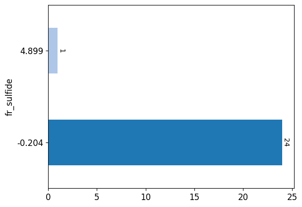

get_color_dict(['a','a','b']){'a': (0.6823529411764706, 0.7803921568627451, 0.9098039215686274),
'b': (1.0, 0.4980392156862745, 0.054901960784313725)}set_sns ()
Set seaborn resolution for notebook display
get_color_dict (categories, palette:str='tab20')
Assign colors to a list of names (allow duplicates), returns a dictionary of unique name with corresponding color
| Type | Default | Details | |
|---|---|---|---|
| categories | list of names to assign color | ||
| palette | str | tab20 | choose from sns.color_palette |
logo_func (df:pandas.core.frame.DataFrame, title:str='logo')
Use logomaker plot motif logos given a df matrix
| Type | Default | Details | |
|---|---|---|---|
| df | DataFrame | a dataframe that contains ratios for each amino acid at each position | |
| title | str | logo | title of the motif logo |
get_logo (df:pandas.core.frame.DataFrame, kinase:str)
Given stacked df (index as kinase, columns as substrates), get a specific kinase’s logo
| Type | Details | |
|---|---|---|
| df | DataFrame | stacked Dataframe with kinase as index, substrates as columns |
| kinase | str | a specific kinase name in index |
This function is to replicate the motif logo from Johnson et al. Nature: An atlas of substrate specificities for the human serine/threonine kinome. Given raw PSPA data, it can output a motif logo.
| -5P | -5G | -5A | -5C | -5S | -5T | -5V | -5I | -5L | -5M | -5F | -5Y | -5W | -5H | -5K | -5R | -5Q | -5N | -5D | -5E | -5s | -5t | -5y | -4P | -4G | -4A | -4C | -4S | -4T | -4V | -4I | -4L | -4M | -4F | -4Y | -4W | -4H | -4K | -4R | -4Q | -4N | -4D | -4E | -4s | -4t | -4y | -3P | -3G | -3A | -3C | -3S | -3T | -3V | -3I | -3L | -3M | -3F | -3Y | -3W | -3H | -3K | -3R | -3Q | -3N | -3D | -3E | -3s | -3t | -3y | -2P | -2G | -2A | -2C | -2S | -2T | -2V | -2I | -2L | -2M | -2F | -2Y | -2W | -2H | -2K | -2R | -2Q | -2N | -2D | -2E | -2s | -2t | -2y | -1P | -1G | -1A | -1C | -1S | -1T | -1V | -1I | -1L | -1M | -1F | -1Y | -1W | -1H | -1K | -1R | -1Q | -1N | -1D | -1E | -1s | -1t | -1y | 1P | 1G | 1A | 1C | 1S | 1T | 1V | 1I | 1L | 1M | 1F | 1Y | 1W | 1H | 1K | 1R | 1Q | 1N | 1D | 1E | 1s | 1t | 1y | 2P | 2G | 2A | 2C | 2S | 2T | 2V | 2I | 2L | 2M | 2F | 2Y | 2W | 2H | 2K | 2R | 2Q | 2N | 2D | 2E | 2s | 2t | 2y | 3P | 3G | 3A | 3C | 3S | 3T | 3V | 3I | 3L | 3M | 3F | 3Y | 3W | 3H | 3K | 3R | 3Q | 3N | 3D | 3E | 3s | 3t | 3y | 4P | 4G | 4A | 4C | 4S | 4T | 4V | 4I | 4L | 4M | 4F | 4Y | 4W | 4H | 4K | 4R | 4Q | 4N | 4D | 4E | 4s | 4t | 4y | |
|---|---|---|---|---|---|---|---|---|---|---|---|---|---|---|---|---|---|---|---|---|---|---|---|---|---|---|---|---|---|---|---|---|---|---|---|---|---|---|---|---|---|---|---|---|---|---|---|---|---|---|---|---|---|---|---|---|---|---|---|---|---|---|---|---|---|---|---|---|---|---|---|---|---|---|---|---|---|---|---|---|---|---|---|---|---|---|---|---|---|---|---|---|---|---|---|---|---|---|---|---|---|---|---|---|---|---|---|---|---|---|---|---|---|---|---|---|---|---|---|---|---|---|---|---|---|---|---|---|---|---|---|---|---|---|---|---|---|---|---|---|---|---|---|---|---|---|---|---|---|---|---|---|---|---|---|---|---|---|---|---|---|---|---|---|---|---|---|---|---|---|---|---|---|---|---|---|---|---|---|---|---|---|---|---|---|---|---|---|---|---|---|---|---|---|---|---|---|---|---|---|---|---|---|---|---|---|---|
| kinase | |||||||||||||||||||||||||||||||||||||||||||||||||||||||||||||||||||||||||||||||||||||||||||||||||||||||||||||||||||||||||||||||||||||||||||||||||||||||||||||||||||||||||||||||||||||||||||||||||||||||||||||||
| AAK1 | 7614134.38 | 2590563.43 | 3001315.49 | 4696631.43 | 4944311.77 | 8315837.72 | 10056545.00 | 16433061.43 | 10499735.53 | 9133577.86 | 4493053.86 | 10062728.22 | 3327454.51 | 3504742.95 | 2767294.24 | 10105742.33 | 5923673.04 | 2909152.87 | 1695155.97 | 1617848.59 | 2128670.48 | 2128670.48 | 6460994.89 | 5260312.92 | 6325834.43 | 6957993.77 | 5369434.90 | 5713920.54 | 6612201.68 | 6093662.03 | 6120308.98 | 7306988.18 | 6829677.84 | 5119221.55 | 5263235.93 | 3974771.07 | 5065007.89 | 7968511.43 | 7041049.08 | 6174443.51 | 4228327.20 | 3271230.67 | 5511933.84 | 3267817.62 | 3267817.62 | 3338569.94 | 8921287.46 | 4210322.63 | 9202467.84 | 5247517.95 | 6741480.38 | 6810877.54 | 5271476.43 | 4928031.78 | 4337561.80 | 6432256.95 | 4006022.34 | 3383022.36 | 3493591.45 | 3269349.53 | 4253143.83 | 4.777087e+06 | 5719013.51 | 4787112.42 | 2233864.71 | 3045337.18 | 2489664.19 | 2489664.19 | 2253600.17 | 2216028.59 | 2766177.13 | 5269960.36 | 5606488.15 | 5715776.94 | 8442376.88 | 3330815.96 | 3699660.08 | 5573758.37 | 11418739.19 | 3289921.82 | 3904724.03 | 2831767.59 | 5548344.99 | 5749698.72 | 5.431821e+06 | 14853623.17 | 7911791.51 | 7.877661e+06 | 6.228872e+06 | 2050311.16 | 2050311.16 | 4757608.56 | 12743566.74 | 7922825.91 | 4320088.81 | 3424101.65 | 2951131.47 | 3531424.24 | 4395648.71 | 4876361.62 | 7337788.35 | 6213208.09 | 6110446.84 | 8716736.64 | 4935259.96 | 7723412.28 | 13791485.68 | 10359621.72 | 4456718.79 | 4865705.32 | 1811253.16 | 1639403.12 | 1357999.07 | 1357999.07 | 2002371.19 | 6415286.88 | 99964895.25 | 4316874.96 | 3007074.62 | 2745785.51 | 8910120.32 | 1483692.44 | 1412340.64 | 1811600.47 | 1711244.81 | 1783236.05 | 1979521.48 | 2246919.31 | 2217612.04 | 2688447.64 | 3450817.64 | 1911929.56 | 2358432.64 | 1421652.45 | 1.359588e+06 | 1.706013e+06 | 1.706013e+06 | 1389641.63 | 5119157.71 | 7278540.04 | 7284322.40 | 6474714.78 | 8229140.75 | 31325167.00 | 5271194.40 | 3595811.04 | 4019474.24 | 4672000.36 | 4719445.91 | 4458958.54 | 5560394.09 | 6019747.75 | 5603858.75 | 7520620.82 | 7492737.30 | 8100331.77 | 5364638.21 | 5087031.12 | 3976345.18 | 3976345.18 | 3984759.21 | 7873214.56 | 10666925.10 | 6726092.35 | 8347110.75 | 8474126.59 | 36243425.13 | 7049439.08 | 4480458.41 | 5646461.38 | 5049205.04 | 4966940.21 | 6154422.64 | 5554384.65 | 7784625.71 | 8536454.84 | 10411516.21 | 7199439.88 | 8496115.61 | 4678462.79 | 4293019.55 | 3871242.35 | 3871242.35 | 4144314.24 | 6754640.94 | 7548893.13 | 6945441.59 | 6316583.85 | 5852227.64 | 11986373.78 | 4544765.44 | 4468425.80 | 4958371.35 | 4992757.20 | 5630292.14 | 5605199.37 | 8889242.83 | 6020662.73 | 8938081.41 | 9983402.01 | 6833481.55 | 6364453.29 | 4189045.89 | 4921595.57 | 2705053.53 | 2705053.53 | 2909279.71 |
| ACVR2A | 4991039.28 | 5783855.86 | 7015770.78 | 8367603.09 | 7072052.48 | 7601399.57 | 7188292.41 | 7513915.73 | 7159894.71 | 6266122.81 | 7217726.01 | 6944709.95 | 9655463.75 | 6855044.90 | 6135259.88 | 5714942.29 | 5174360.28 | 6446237.55 | 10676798.47 | 9490370.51 | 9417512.45 | 9417512.45 | 9143262.67 | 5189500.90 | 6115977.27 | 6183207.45 | 8746774.91 | 8620216.35 | 8958568.82 | 6057960.27 | 5865979.65 | 5795429.17 | 6425254.28 | 6896823.79 | 6528270.38 | 8404648.40 | 6144455.59 | 4524121.26 | 5095303.46 | 5374811.94 | 5585576.72 | 11592053.32 | 9685649.12 | 9011965.48 | 9011965.48 | 7594632.10 | 5362570.64 | 6972103.63 | 5730145.40 | 8939563.00 | 8882396.89 | 9190426.82 | 5827104.19 | 5369092.23 | 5113057.94 | 5497993.14 | 5506587.16 | 5872246.52 | 6306875.17 | 5653091.40 | 3785783.33 | 4.917763e+06 | 5423081.45 | 5362812.26 | 11212957.52 | 12861894.95 | 12864905.98 | 12864905.98 | 10409124.62 | 2387566.18 | 3719260.44 | 3944902.95 | 13065086.92 | 9492139.23 | 8190708.05 | 3735685.73 | 3374694.08 | 3204387.82 | 2964892.35 | 3752110.50 | 3701143.76 | 4014811.08 | 3625177.90 | 2636456.76 | 3.752367e+06 | 5717785.76 | 5027610.59 | 3.199105e+07 | 3.890473e+07 | 7519770.93 | 7519770.93 | 5361107.35 | 3979856.52 | 3356955.48 | 4841646.42 | 14843896.03 | 7884721.89 | 8307355.21 | 6504731.08 | 4736171.24 | 7504065.67 | 8479523.23 | 6886559.95 | 7839785.04 | 8170003.32 | 6301556.70 | 3133305.90 | 3399144.04 | 5297925.78 | 4806449.34 | 7245964.01 | 7619248.38 | 8081957.45 | 8081957.45 | 10665551.58 | 1962410.84 | 3317170.91 | 3730968.37 | 10441425.87 | 6905481.50 | 7758917.55 | 7639849.76 | 6777723.81 | 5034766.37 | 5741319.00 | 5371631.94 | 5597503.85 | 5543419.04 | 4036400.21 | 1885554.07 | 2399467.34 | 7087499.47 | 3680225.89 | 9707458.36 | 1.850553e+07 | 2.680623e+07 | 2.680623e+07 | 16187744.66 | 5866522.32 | 8056284.20 | 6653384.32 | 8609148.01 | 6900909.95 | 6081477.26 | 5928764.40 | 5427120.90 | 4000029.05 | 5214509.68 | 5833632.75 | 6561916.21 | 5830995.61 | 6657869.64 | 4773873.27 | 5549060.20 | 5962667.67 | 5118947.28 | 7342349.21 | 6089086.81 | 6553062.94 | 6553062.94 | 5204999.87 | 6765402.33 | 5981896.69 | 5346578.80 | 6919984.14 | 7959489.88 | 7230276.28 | 5724908.70 | 5600557.92 | 6186548.03 | 5952584.60 | 6508513.22 | 6613614.54 | 6419485.14 | 5958101.56 | 4666926.40 | 3909037.15 | 5041118.65 | 5297856.53 | 6281516.23 | 8795439.82 | 5241575.71 | 5241575.71 | 8237893.33 | 7993593.88 | 5729648.65 | 5252569.87 | 7759899.88 | 5847330.49 | 6832130.05 | 5439639.57 | 5935276.66 | 5396841.45 | 6976824.69 | 5517910.17 | 6107147.03 | 8435953.93 | 6039472.76 | 5556300.56 | 5178734.62 | 6490097.70 | 5862480.97 | 6742905.78 | 6750653.36 | 7414220.16 | 7414220.16 | 6209576.97 |
| ACVR2B | 26480329.10 | 25689687.16 | 28137300.90 | 45175909.30 | 32876722.90 | 33516959.03 | 27011194.06 | 21996255.94 | 23412987.54 | 25670581.40 | 30029680.93 | 30172687.84 | 35861732.85 | 25743398.12 | 21466618.54 | 23457282.42 | 24765933.65 | 29600378.31 | 52942189.79 | 44756418.68 | 37869524.53 | 37869524.53 | 36929423.91 | 26315617.68 | 30726667.27 | 28226685.89 | 38126762.75 | 43013450.33 | 42772589.49 | 25461877.69 | 22496529.73 | 25367364.10 | 24579622.29 | 30632363.88 | 29811628.74 | 34569034.39 | 29901290.43 | 18566682.92 | 18058410.71 | 24160712.63 | 28003909.47 | 50383510.79 | 42873444.64 | 38601826.06 | 38601826.06 | 41781415.03 | 21589896.66 | 25896930.06 | 25366399.23 | 32391161.86 | 39268700.37 | 34953285.70 | 24544954.48 | 21195505.14 | 19950289.89 | 22068743.84 | 24723315.70 | 26493695.74 | 30467219.92 | 25540309.03 | 19859603.21 | 1.709886e+07 | 26065744.56 | 27157359.79 | 54792099.66 | 55014596.67 | 49089846.01 | 49089846.01 | 64369371.61 | 10383093.19 | 14625890.49 | 20808684.35 | 47636343.76 | 35304162.57 | 37962422.19 | 16548611.68 | 12258162.50 | 16494615.48 | 14200211.36 | 15925579.76 | 16320441.30 | 15878502.28 | 20560506.20 | 12498027.05 | 1.395433e+07 | 20433739.04 | 27129929.31 | 1.209644e+08 | 1.577022e+08 | 36557271.03 | 36557271.03 | 27458606.90 | 15819245.58 | 15139149.87 | 21342364.26 | 29521866.83 | 25664232.00 | 28391950.76 | 27701781.06 | 19818122.11 | 36672320.40 | 36335662.38 | 26878195.34 | 34779831.32 | 41496713.73 | 26825589.12 | 14727760.12 | 14104749.87 | 21513560.53 | 25187025.89 | 38662884.38 | 34714380.60 | 49330056.97 | 49330056.97 | 49257036.45 | 8904399.29 | 14948055.42 | 16765650.37 | 40252260.64 | 24215134.31 | 30636898.81 | 29960059.79 | 24650899.32 | 21201767.48 | 25848637.41 | 22155401.37 | 24952828.13 | 27310123.87 | 23192003.06 | 10480787.57 | 10537916.26 | 28697585.51 | 20916022.30 | 58048288.98 | 1.103872e+08 | 1.218935e+08 | 1.218935e+08 | 69945784.03 | 36115383.96 | 32738418.07 | 28447805.03 | 28467296.48 | 30620244.98 | 27892442.81 | 29113624.35 | 25315594.22 | 17742323.86 | 22296105.90 | 21802892.95 | 27379509.39 | 24510227.47 | 22526980.58 | 19271375.56 | 21215337.11 | 22082221.26 | 23980394.91 | 34155403.55 | 28198813.13 | 38385326.47 | 38385326.47 | 28511534.88 | 32570983.87 | 30150790.48 | 26899530.88 | 30059325.25 | 38558739.93 | 36859921.47 | 27039358.24 | 27590185.37 | 32159022.90 | 28530956.88 | 26440586.17 | 32902030.17 | 31106381.62 | 23931820.75 | 17025117.96 | 21234075.57 | 24959228.30 | 24492089.19 | 27379743.65 | 34799587.30 | 29745626.40 | 29745626.40 | 32930899.01 | 35872341.41 | 28942663.95 | 32630294.18 | 32307682.27 | 29351484.80 | 32158594.62 | 27585750.22 | 27087769.55 | 26427108.32 | 26008460.67 | 24006599.74 | 29260306.53 | 39105460.91 | 27984195.21 | 22496915.32 | 24236904.72 | 29132857.30 | 26527389.14 | 36388726.15 | 34729319.54 | 37906081.09 | 37906081.09 | 31761418.56 |
| AKT1 | 18399509.29 | 18104681.05 | 16831835.48 | 17247743.90 | 22647275.57 | 17801288.32 | 13037570.99 | 13271896.32 | 14156489.52 | 15409761.84 | 16671963.73 | 15742204.09 | 16027501.16 | 19907160.04 | 28966209.27 | 46308665.22 | 14988023.16 | 14258599.40 | 11464166.24 | 11466588.37 | 12987224.59 | 12987224.59 | 13061088.75 | 19398931.56 | 22044179.39 | 19063613.39 | 16798065.92 | 24561075.64 | 21053645.01 | 16134289.55 | 14065393.27 | 15980319.99 | 19175233.16 | 15650650.91 | 16726542.08 | 20714995.14 | 21727731.71 | 39387269.30 | 58649797.06 | 19398853.50 | 17142314.75 | 12090323.96 | 14986249.30 | 16353759.94 | 16353759.94 | 14758361.18 | 13509722.97 | 12072788.52 | 14485106.48 | 13140602.43 | 20065358.79 | 15665910.69 | 6344537.74 | 6534731.06 | 7876057.80 | 7508915.65 | 7223254.58 | 9468824.32 | 9373015.30 | 22309094.06 | 62169227.98 | 2.418045e+08 | 14931574.94 | 8856712.42 | 4399325.50 | 4368741.57 | 8590356.30 | 8590356.30 | 7963766.19 | 6789907.74 | 13268000.87 | 21110618.12 | 21971629.68 | 41332981.64 | 40514113.91 | 9863410.69 | 9269011.71 | 22892565.64 | 11168273.31 | 11301067.87 | 8789774.53 | 7431841.39 | 18789568.98 | 48900192.16 | 1.630226e+08 | 12228020.08 | 9955364.00 | 3.198070e+06 | 2.965348e+06 | 7792556.58 | 7792556.58 | 6120956.35 | 22293028.49 | 28410424.95 | 15842330.43 | 14879920.18 | 24373755.69 | 18116410.05 | 9634836.58 | 7220572.84 | 20977914.39 | 24295340.44 | 17851764.42 | 26612602.88 | 14220032.24 | 25266134.27 | 38185706.19 | 37525548.94 | 21684468.18 | 30811109.25 | 15574350.10 | 8290898.95 | 6467371.45 | 6467371.45 | 19300394.93 | 7187402.87 | 13136588.59 | 9834130.15 | 18667564.57 | 25572492.56 | 24540953.28 | 27939307.19 | 33952990.53 | 24441788.18 | 33785347.17 | 46236500.98 | 17042662.91 | 22462502.25 | 15812139.32 | 17054957.55 | 19023143.41 | 21570182.92 | 18462014.12 | 5882718.69 | 5.841048e+06 | 9.088321e+06 | 9.088321e+06 | 11479510.37 | 14699453.43 | 21525508.02 | 18211185.00 | 23598117.67 | 61030368.30 | 40388451.24 | 22179287.33 | 20441529.87 | 22718840.65 | 15801551.87 | 15240719.77 | 18325689.88 | 16679331.51 | 31357623.66 | 26095263.75 | 39102369.13 | 18129455.91 | 21709667.73 | 10984748.38 | 7899072.12 | 9884167.72 | 9884167.72 | 12951695.66 | 19773952.19 | 28710820.58 | 19788527.29 | 24659376.30 | 38048939.96 | 28284495.88 | 18552859.18 | 19892556.30 | 19599278.84 | 19914391.75 | 24525110.15 | 23248076.40 | 22854369.53 | 30978724.22 | 37068344.22 | 45991399.36 | 22887074.13 | 25185236.76 | 11842652.96 | 12741276.18 | 13591360.01 | 13591360.01 | 13703183.16 | 41007225.21 | 26477432.58 | 21719674.69 | 20203616.26 | 38961301.73 | 32270913.63 | 18364889.10 | 16918422.73 | 20570253.26 | 20228125.32 | 17323199.08 | 15512400.43 | 23151572.85 | 29511541.69 | 50942663.29 | 48152924.11 | 32693882.62 | 28896602.57 | 19701350.30 | 13887460.52 | 17483074.60 | 17483074.60 | 11696833.54 |
| AKT2 | 5439237.54 | 5569477.23 | 5805462.70 | 6301076.01 | 5004932.12 | 4812022.80 | 3906822.27 | 3776845.45 | 4450344.85 | 4629319.80 | 4945257.93 | 4922327.73 | 4818865.35 | 5502849.58 | 8846468.40 | 13331891.81 | 4466206.11 | 4288906.37 | 2757476.64 | 2846855.07 | 4120973.53 | 4120973.53 | 4296409.60 | 5553404.98 | 6777166.70 | 6560098.67 | 6582761.90 | 5632446.40 | 5626768.67 | 4006942.83 | 3777456.81 | 4557921.65 | 5073875.76 | 3998927.33 | 4589150.59 | 3853565.73 | 5877347.98 | 11323980.56 | 13410263.75 | 5637101.36 | 5224016.00 | 3264181.56 | 3696233.79 | 4296297.38 | 4296297.38 | 3662821.27 | 2964033.65 | 3057508.32 | 4553667.71 | 5296786.48 | 4880459.72 | 4469909.37 | 2397056.82 | 2383607.99 | 2527122.34 | 2537478.97 | 2505546.76 | 2706594.73 | 2558155.12 | 4758158.69 | 16642999.72 | 8.780359e+07 | 4181479.55 | 2649826.02 | 1856813.00 | 2009071.96 | 3014998.55 | 3014998.55 | 2786490.48 | 2330601.70 | 3722199.05 | 5979230.51 | 8974567.12 | 13632411.94 | 10105631.00 | 2942671.35 | 2646410.48 | 4742426.87 | 2952548.95 | 2697527.22 | 2668970.71 | 2644657.15 | 4975136.47 | 17108283.08 | 3.647206e+07 | 3975190.12 | 3308858.09 | 1.834547e+06 | 1.841426e+06 | 2918462.36 | 2918462.36 | 2568865.61 | 6512287.04 | 6714446.62 | 5519547.24 | 5502392.17 | 6214686.11 | 5051604.22 | 3036099.23 | 2495300.10 | 4484786.48 | 5714877.99 | 4615614.03 | 7993743.25 | 4279316.71 | 7406520.17 | 7869914.93 | 9347586.23 | 6492965.18 | 9718326.28 | 3850428.89 | 2650873.62 | 2558031.84 | 2558031.84 | 4818770.25 | 3390428.52 | 4010009.36 | 3705137.46 | 7307114.68 | 5708742.09 | 5610130.63 | 4741527.67 | 5361541.18 | 5198119.65 | 6335041.93 | 8358213.97 | 4558845.44 | 4563970.27 | 4449433.29 | 4786097.96 | 5282519.45 | 5576834.25 | 5150662.99 | 2286465.27 | 2.105027e+06 | 3.628510e+06 | 3.628510e+06 | 4152546.04 | 4557267.80 | 6705472.43 | 6335117.94 | 8824774.96 | 18469567.17 | 8797708.00 | 4532827.16 | 3618750.27 | 4297882.08 | 3940764.85 | 3314977.87 | 4326879.06 | 3564337.80 | 8661597.97 | 6560407.19 | 6956135.73 | 4339532.45 | 6049276.73 | 3175814.63 | 2833442.97 | 5420413.57 | 5420413.57 | 5570730.59 | 5492323.72 | 6803045.82 | 5712262.24 | 8338449.42 | 6916137.16 | 5765528.76 | 3987390.37 | 3310626.06 | 4606344.89 | 3944710.78 | 4615743.61 | 4760316.90 | 4766437.21 | 7463546.47 | 9581858.17 | 9777288.15 | 5173060.60 | 4932877.74 | 3157981.08 | 3133584.99 | 4337162.19 | 4337162.19 | 5399811.38 | 9707178.16 | 7244546.68 | 5450860.89 | 7077129.19 | 7739122.90 | 7823932.94 | 3778464.64 | 4053742.59 | 4346509.71 | 4803778.43 | 4018212.65 | 4513237.41 | 4161648.84 | 6812201.58 | 11590683.50 | 9932525.89 | 6544476.93 | 6252360.75 | 3629091.99 | 3510048.19 | 5499662.30 | 5499662.30 | 4188620.88 |
get_logo2 (full:pandas.core.frame.DataFrame, title:str='logo')
Plot logo from a full freqency matrix of a kinase
| Type | Default | Details | |
|---|---|---|---|
| full | DataFrame | a dataframe that contains the full matrix of a kinase, with index as amino acid, and columns as positions | |
| title | str | logo | title of the graph |
/opt/hostedtoolcache/Python/3.10.14/x64/lib/python3.10/site-packages/fastcore/docscrape.py:230: UserWarning: Unknown section See Also
else: warn(msg)plot_rank (sorted_df:pandas.core.frame.DataFrame, x:str, y:str, n_hi:int=10, n_lo:int=10, figsize:tuple=(10, 8), data=None, hue=None, size=None, style=None, palette=None, hue_order=None, hue_norm=None, sizes=None, size_order=None, size_norm=None, markers=True, style_order=None, legend='auto', ax=None)
Plot rank from a sorted dataframe
| Type | Default | Details | |
|---|---|---|---|
| sorted_df | DataFrame | a sorted dataframe | |
| x | str | column name for x axis | |
| y | str | column name for y aixs | |
| n_hi | int | 10 | if not None, show the head n names |
| n_lo | int | 10 | if not None, show the tail n names |
| figsize | tuple | (10, 8) | figure size |
| data | NoneType | None | Input data structure. Either a long-form collection of vectors that can be assigned to named variables or a wide-form dataset that will be internally reshaped. |
| hue | NoneType | None | Grouping variable that will produce points with different colors. Can be either categorical or numeric, although color mapping will behave differently in latter case. |
| size | NoneType | None | Grouping variable that will produce points with different sizes. Can be either categorical or numeric, although size mapping will behave differently in latter case. |
| style | NoneType | None | Grouping variable that will produce points with different markers. Can have a numeric dtype but will always be treated as categorical. |
| palette | NoneType | None | Method for choosing the colors to use when mapping the hue semantic.String values are passed to :func: color_palette. List or dict valuesimply categorical mapping, while a colormap object implies numeric mapping. |
| hue_order | NoneType | None | Specify the order of processing and plotting for categorical levels of thehue semantic. |
| hue_norm | NoneType | None | Either a pair of values that set the normalization range in data units or an object that will map from data units into a [0, 1] interval. Usage implies numeric mapping. |
| sizes | NoneType | None | An object that determines how sizes are chosen when size is used.List or dict arguments should provide a size for each unique data value, which forces a categorical interpretation. The argument may also be a min, max tuple. |
| size_order | NoneType | None | Specified order for appearance of the size variable levels,otherwise they are determined from the data. Not relevant when the size variable is numeric. |
| size_norm | NoneType | None | Normalization in data units for scaling plot objects when thesize variable is numeric. |
| markers | bool | True | Object determining how to draw the markers for different levels of thestyle variable. Setting to True will use default markers, oryou can pass a list of markers or a dictionary mapping levels of the style variable to markers. Setting to False will drawmarker-less lines. Markers are specified as in matplotlib. |
| style_order | NoneType | None | Specified order for appearance of the style variable levelsotherwise they are determined from the data. Not relevant when the style variable is numeric. |
| legend | str | auto | How to draw the legend. If “brief”, numeric hue and sizevariables will be represented with a sample of evenly spaced values. If “full”, every group will get an entry in the legend. If “auto”, choose between brief or full representation based on number of levels. If False, no legend data is added and no legend is drawn. |
| ax | NoneType | None | Pre-existing axes for the plot. Otherwise, call :func:matplotlib.pyplot.gcainternally. |
| Returns | :class:matplotlib.axes.Axes |
The matplotlib axes containing the plot. |
# load data
# df = Data.get_pspa_raw().set_index('kinase')
df = pd.read_csv('raw/pspa_st_raw.csv').set_index('kinase')
# get sorted dataframe
sorted_df = df.max(1).reset_index(name='values').sort_values('values')
sorted_df.head()| kinase | values | |
|---|---|---|
| 68 | CK1G2 | 189898.392 |
| 294 | VRK2 | 4191709.640 |
| 8 | ALPHAK3 | 4573611.730 |
| 249 | PRPK | 8495330.790 |
| 38 | CAMLCK | 9413689.600 |
plot_hist (df:pandas.core.frame.DataFrame, x:str, figsize:tuple=(6, 2), data=None, y=None, hue=None, weights=None, stat='count', bins='auto', binwidth=None, binrange=None, discrete=None, cumulative=False, common_bins=True, common_norm=True, multiple='layer', element='bars', fill=True, shrink=1, kde=False, kde_kws=None, line_kws=None, thresh=0, pthresh=None, pmax=None, cbar=False, cbar_ax=None, cbar_kws=None, palette=None, hue_order=None, hue_norm=None, color=None, log_scale=None, legend=True, ax=None)
| Type | Default | Details | |
|---|---|---|---|
| df | DataFrame | a dataframe that contain values for plot | |
| x | str | column name of values | |
| figsize | tuple | (6, 2) | |
| data | NoneType | None | Input data structure. Either a long-form collection of vectors that can be assigned to named variables or a wide-form dataset that will be internally reshaped. |
| y | NoneType | None | |
| hue | NoneType | None | Semantic variable that is mapped to determine the color of plot elements. |
| weights | NoneType | None | If provided, weight the contribution of the corresponding data points towards the count in each bin by these factors. |
| stat | str | count | Aggregate statistic to compute in each bin. - count: show the number of observations in each bin- frequency: show the number of observations divided by the bin width- probability or proportion: normalize such that bar heights sum to 1- percent: normalize such that bar heights sum to 100- density: normalize such that the total area of the histogram equals 1 |
| bins | str | auto | Generic bin parameter that can be the name of a reference rule, the number of bins, or the breaks of the bins. Passed to :func: numpy.histogram_bin_edges. |
| binwidth | NoneType | None | Width of each bin, overrides bins but can be used withbinrange. |
| binrange | NoneType | None | Lowest and highest value for bin edges; can be used either with bins or binwidth. Defaults to data extremes. |
| discrete | NoneType | None | If True, default to binwidth=1 and draw the bars so that they arecentered on their corresponding data points. This avoids “gaps” that may otherwise appear when using discrete (integer) data. |
| cumulative | bool | False | If True, plot the cumulative counts as bins increase. |
| common_bins | bool | True | If True, use the same bins when semantic variables produce multiple plots. If using a reference rule to determine the bins, it will be computed with the full dataset. |
| common_norm | bool | True | If True and using a normalized statistic, the normalization will apply over the full dataset. Otherwise, normalize each histogram independently. |
| multiple | str | layer | Approach to resolving multiple elements when semantic mapping creates subsets. Only relevant with univariate data. |
| element | str | bars | Visual representation of the histogram statistic. Only relevant with univariate data. |
| fill | bool | True | If True, fill in the space under the histogram. Only relevant with univariate data. |
| shrink | int | 1 | Scale the width of each bar relative to the binwidth by this factor. Only relevant with univariate data. |
| kde | bool | False | If True, compute a kernel density estimate to smooth the distribution and show on the plot as (one or more) line(s). Only relevant with univariate data. |
| kde_kws | NoneType | None | Parameters that control the KDE computation, as in :func:kdeplot. |
| line_kws | NoneType | None | Parameters that control the KDE visualization, passed to :meth: matplotlib.axes.Axes.plot. |
| thresh | int | 0 | Cells with a statistic less than or equal to this value will be transparent. Only relevant with bivariate data. |
| pthresh | NoneType | None | Like thresh, but a value in [0, 1] such that cells with aggregate counts(or other statistics, when used) up to this proportion of the total will be transparent. |
| pmax | NoneType | None | A value in [0, 1] that sets that saturation point for the colormap at a value such that cells below constitute this proportion of the total count (or other statistic, when used). |
| cbar | bool | False | If True, add a colorbar to annotate the color mapping in a bivariate plot. Note: Does not currently support plots with a hue variable well. |
| cbar_ax | NoneType | None | Pre-existing axes for the colorbar. |
| cbar_kws | NoneType | None | Additional parameters passed to :meth:matplotlib.figure.Figure.colorbar. |
| palette | NoneType | None | Method for choosing the colors to use when mapping the hue semantic.String values are passed to :func: color_palette. List or dict valuesimply categorical mapping, while a colormap object implies numeric mapping. |
| hue_order | NoneType | None | Specify the order of processing and plotting for categorical levels of thehue semantic. |
| hue_norm | NoneType | None | Either a pair of values that set the normalization range in data units or an object that will map from data units into a [0, 1] interval. Usage implies numeric mapping. |
| color | NoneType | None | Single color specification for when hue mapping is not used. Otherwise, the plot will try to hook into the matplotlib property cycle. |
| log_scale | NoneType | None | Set axis scale(s) to log. A single value sets the data axis for any numeric axes in the plot. A pair of values sets each axis independently. Numeric values are interpreted as the desired base (default 10). When None or False, seaborn defers to the existing Axes scale. |
| legend | bool | True | If False, suppress the legend for semantic variables. |
| ax | NoneType | None | Pre-existing axes for the plot. Otherwise, call :func:matplotlib.pyplot.gcainternally. |
| Returns | :class:matplotlib.axes.Axes |
The matplotlib axes containing the plot. |
| kinase | values | |
|---|---|---|
| 68 | CK1G2 | 189898.392 |
| 294 | VRK2 | 4191709.640 |
| 8 | ALPHAK3 | 4573611.730 |
| 249 | PRPK | 8495330.790 |
| 38 | CAMLCK | 9413689.600 |
plot_heatmap (matrix, title:str='heatmap', figsize:tuple=(6, 10), cmap:str='binary', vmin=None, vmax=None, center=None, robust=False, annot=None, fmt='.2g', annot_kws=None, linewidths=0, linecolor='white', cbar=True, cbar_kws=None, cbar_ax=None, square=False, xticklabels='auto', yticklabels='auto', mask=None, ax=None)
Plot heatmap based on a matrix of values
| Type | Default | Details | |
|---|---|---|---|
| matrix | a matrix of values | ||
| title | str | heatmap | title of the heatmap |
| figsize | tuple | (6, 10) | figure size of the heatmap |
| cmap | str | binary | color map, default is dark&white |
| vmin | NoneType | None | |
| vmax | NoneType | None | |
| center | NoneType | None | The value at which to center the colormap when plotting divergent data. Using this parameter will change the default cmap if none isspecified. |
| robust | bool | False | If True and vmin or vmax are absent, the colormap range iscomputed with robust quantiles instead of the extreme values. |
| annot | NoneType | None | If True, write the data value in each cell. If an array-like with the same shape as data, then use this to annotate the heatmap insteadof the data. Note that DataFrames will match on position, not index. |
| fmt | str | .2g | String formatting code to use when adding annotations. |
| annot_kws | NoneType | None | Keyword arguments for :meth:matplotlib.axes.Axes.text when annotis True. |
| linewidths | int | 0 | Width of the lines that will divide each cell. |
| linecolor | str | white | Color of the lines that will divide each cell. |
| cbar | bool | True | Whether to draw a colorbar. |
| cbar_kws | NoneType | None | Keyword arguments for :meth:matplotlib.figure.Figure.colorbar. |
| cbar_ax | NoneType | None | Axes in which to draw the colorbar, otherwise take space from the main Axes. |
| square | bool | False | If True, set the Axes aspect to “equal” so each cell will be square-shaped. |
| xticklabels | str | auto | |
| yticklabels | str | auto | |
| mask | NoneType | None | If passed, data will not be shown in cells where mask is True.Cells with missing values are automatically masked. |
| ax | NoneType | None | Axes in which to draw the plot, otherwise use the currently-active Axes. |
| Returns | matplotlib Axes | Axes object with the heatmap. |
| Position | -5 | -4 | -3 | -2 | -1 | 1 | 2 | 3 | 4 |
|---|---|---|---|---|---|---|---|---|---|
| aa | |||||||||
| P | 0.060639 | 0.066152 | 0.074972 | 0.110254 | 0.110254 | 0.386313 | 0.057459 | 0.135105 | 0.062361 |
| G | 0.076075 | 0.074972 | 0.126792 | 0.061742 | 0.087100 | 0.046358 | 0.068508 | 0.101883 | 0.067929 |
| A | 0.091510 | 0.083793 | 0.061742 | 0.142227 | 0.100331 | 0.089404 | 0.108287 | 0.071982 | 0.080178 |
| C | 0.011025 | 0.006615 | 0.011025 | 0.030871 | 0.017641 | 0.012141 | 0.023204 | 0.018826 | 0.006682 |
| S | 0.036384 | 0.049614 | 0.024256 | 0.036384 | 0.023153 | 0.027594 | 0.028729 | 0.035437 | 0.038976 |
plot_2d (X:pandas.core.frame.DataFrame, data=None, x=None, y=None, hue=None, size=None, style=None, palette=None, hue_order=None, hue_norm=None, sizes=None, size_order=None, size_norm=None, markers=True, style_order=None, legend='auto', ax=None)
Make 2D plot from a dataframe that has first column to be x, and second column to be y
| Type | Default | Details | |
|---|---|---|---|
| X | DataFrame | a dataframe that has first column to be x, and second column to be y | |
| data | NoneType | None | Input data structure. Either a long-form collection of vectors that can be assigned to named variables or a wide-form dataset that will be internally reshaped. |
| x | NoneType | None | |
| y | NoneType | None | |
| hue | NoneType | None | Grouping variable that will produce points with different colors. Can be either categorical or numeric, although color mapping will behave differently in latter case. |
| size | NoneType | None | Grouping variable that will produce points with different sizes. Can be either categorical or numeric, although size mapping will behave differently in latter case. |
| style | NoneType | None | Grouping variable that will produce points with different markers. Can have a numeric dtype but will always be treated as categorical. |
| palette | NoneType | None | Method for choosing the colors to use when mapping the hue semantic.String values are passed to :func: color_palette. List or dict valuesimply categorical mapping, while a colormap object implies numeric mapping. |
| hue_order | NoneType | None | Specify the order of processing and plotting for categorical levels of thehue semantic. |
| hue_norm | NoneType | None | Either a pair of values that set the normalization range in data units or an object that will map from data units into a [0, 1] interval. Usage implies numeric mapping. |
| sizes | NoneType | None | An object that determines how sizes are chosen when size is used.List or dict arguments should provide a size for each unique data value, which forces a categorical interpretation. The argument may also be a min, max tuple. |
| size_order | NoneType | None | Specified order for appearance of the size variable levels,otherwise they are determined from the data. Not relevant when the size variable is numeric. |
| size_norm | NoneType | None | Normalization in data units for scaling plot objects when thesize variable is numeric. |
| markers | bool | True | Object determining how to draw the markers for different levels of thestyle variable. Setting to True will use default markers, oryou can pass a list of markers or a dictionary mapping levels of the style variable to markers. Setting to False will drawmarker-less lines. Markers are specified as in matplotlib. |
| style_order | NoneType | None | Specified order for appearance of the style variable levelsotherwise they are determined from the data. Not relevant when the style variable is numeric. |
| legend | str | auto | How to draw the legend. If “brief”, numeric hue and sizevariables will be represented with a sample of evenly spaced values. If “full”, every group will get an entry in the legend. If “auto”, choose between brief or full representation based on number of levels. If False, no legend data is added and no legend is drawn. |
| ax | NoneType | None | Pre-existing axes for the plot. Otherwise, call :func:matplotlib.pyplot.gcainternally. |
| Returns | :class:matplotlib.axes.Axes |
The matplotlib axes containing the plot. |
plot_cluster (df:pandas.core.frame.DataFrame, method:str='pca', hue:str=None, complexity:int=30, palette:str='tab20', legend:bool=False, name_list=None, seed:int=123, s:int=50, **kwargs)
Given a dataframe of values, plot it in 2d, method could be pca, tsne, or umap
| Type | Default | Details | |
|---|---|---|---|
| df | DataFrame | a dataframe of values that is waited for dimensionality reduction | |
| method | str | pca | dimensionality reduction method, choose from pca, umap, and tsne |
| hue | str | None | colname of color |
| complexity | int | 30 | recommend 30 for tsne, 15 for umap, none for pca |
| palette | str | tab20 | color scheme, could be tab10 if less categories |
| legend | bool | False | whether or not add the legend on the side |
| name_list | NoneType | None | a list of names to annotate each dot in the plot |
| seed | int | 123 | seed for dimensionality reduction |
| s | int | 50 | size of the dot |
| kwargs |
| MaxAbsEStateIndex | MinAbsEStateIndex | MinEStateIndex | qed | MolWt | MinPartialCharge | MaxAbsPartialCharge | FpDensityMorgan1 | FpDensityMorgan2 | FpDensityMorgan3 | BCUT2D_MWHI | BCUT2D_MWLOW | BCUT2D_CHGHI | BCUT2D_CHGLO | BCUT2D_LOGPHI | BCUT2D_LOGPLOW | BCUT2D_MRLOW | AvgIpc | BalabanJ | BertzCT | Chi0n | Chi0v | Chi1 | Chi1v | Chi2n | Chi2v | Chi3n | Chi3v | Chi4n | Chi4v | HallKierAlpha | Ipc | Kappa1 | Kappa2 | Kappa3 | PEOE_VSA1 | PEOE_VSA10 | PEOE_VSA11 | PEOE_VSA12 | PEOE_VSA14 | PEOE_VSA2 | PEOE_VSA3 | PEOE_VSA4 | PEOE_VSA6 | PEOE_VSA7 | PEOE_VSA8 | PEOE_VSA9 | SMR_VSA1 | SMR_VSA10 | SMR_VSA3 | SMR_VSA4 | SMR_VSA5 | SMR_VSA6 | SMR_VSA7 | SMR_VSA9 | SlogP_VSA1 | SlogP_VSA2 | SlogP_VSA3 | SlogP_VSA4 | SlogP_VSA5 | SlogP_VSA8 | TPSA | EState_VSA1 | EState_VSA10 | EState_VSA2 | EState_VSA3 | EState_VSA4 | EState_VSA5 | EState_VSA6 | EState_VSA7 | EState_VSA8 | EState_VSA9 | VSA_EState10 | VSA_EState2 | VSA_EState3 | VSA_EState4 | VSA_EState5 | VSA_EState6 | VSA_EState7 | VSA_EState8 | VSA_EState9 | FractionCSP3 | NHOHCount | NOCount | NumAliphaticHeterocycles | NumAromaticCarbocycles | NumAromaticHeterocycles | NumAromaticRings | NumHAcceptors | NumHDonors | NumHeteroatoms | NumRotatableBonds | RingCount | MolLogP | fr_Al_COO | fr_Al_OH | fr_Ar_N | fr_C_O | fr_NH0 | fr_NH1 | fr_NH2 | fr_SH | fr_imidazole | fr_priamide | fr_sulfide | fr_unbrch_alkane | |
|---|---|---|---|---|---|---|---|---|---|---|---|---|---|---|---|---|---|---|---|---|---|---|---|---|---|---|---|---|---|---|---|---|---|---|---|---|---|---|---|---|---|---|---|---|---|---|---|---|---|---|---|---|---|---|---|---|---|---|---|---|---|---|---|---|---|---|---|---|---|---|---|---|---|---|---|---|---|---|---|---|---|---|---|---|---|---|---|---|---|---|---|---|---|---|---|---|---|---|---|---|---|---|---|---|---|---|
| aa | ||||||||||||||||||||||||||||||||||||||||||||||||||||||||||||||||||||||||||||||||||||||||||||||||||||||||||
| A | 9.574074 | 0.731481 | -0.962963 | 0.451352 | 89.094 | -0.480094 | 0.480094 | 2.000000 | 2.166667 | 2.166667 | 16.367425 | 10.385341 | 1.990289 | -1.897069 | 1.676610 | -2.250004 | -0.137563 | 1.360964 | 3.257586 | 59.813538 | 3.510162 | 3.510162 | 2.642734 | 1.627090 | 1.126913 | 1.126913 | 0.389528 | 0.389528 | 0.000000 | 0.000000 | -0.57 | 13.609640 | 5.430000 | 1.767634 | 1.721545 | 10.840195 | 6.041841 | 0.0 | 0.0 | 5.969305 | 4.794537 | 0.0 | 0.000000 | 0.000000 | 6.923737 | 0.000000 | 0.000000 | 9.901065 | 5.969305 | 0.0 | 5.733667 | 12.965578 | 0.000000 | 0.000000 | 0.0 | 5.733667 | 17.117674 | 4.794537 | 0.0 | 6.923737 | 0.0 | 63.32 | 12.011146 | 4.794537 | 0.000000 | 0.000000 | 0.000000 | 6.923737 | 0.0 | 0.000000 | 0.000000 | 10.840195 | 0.000000 | 9.574074 | 7.865741 | 4.835648 | -0.962963 | -0.731481 | 0.000000 | 1.418981 | 0.0 | 0.666667 | 3.0 | 3.0 | 0.0 | 0.0 | 0.0 | 0.0 | 2.0 | 2.0 | 3.0 | 1.0 | 0.0 | -0.5818 | 1.0 | 0.0 | 0.0 | 1.0 | 0.0 | 0.0 | 1.0 | 0.0 | 0.0 | 0.0 | 0.0 | 0.0 |
| C | 9.756435 | 0.189815 | -1.004630 | 0.424382 | 121.161 | -0.480064 | 0.480064 | 2.000000 | 2.428571 | 2.428571 | 32.116867 | 10.376545 | 2.056705 | -1.960761 | 1.795249 | -2.309520 | -0.137419 | 1.645711 | 3.343417 | 75.335159 | 3.664483 | 4.558910 | 3.180739 | 2.406671 | 1.127305 | 1.492453 | 0.513894 | 0.907286 | 0.078093 | 0.234278 | -0.22 | 27.977093 | 6.780000 | 2.872925 | 2.472042 | 10.840195 | 6.041841 | 0.0 | 0.0 | 5.969305 | 4.794537 | 0.0 | 12.628789 | 0.000000 | 0.000000 | 5.752854 | 0.000000 | 9.901065 | 18.598094 | 0.0 | 5.733667 | 6.041841 | 5.752854 | 0.000000 | 0.0 | 5.733667 | 22.870527 | 4.794537 | 0.0 | 0.000000 | 0.0 | 63.32 | 12.011146 | 4.794537 | 5.752854 | 0.000000 | 0.000000 | 0.000000 | 0.0 | 0.000000 | 12.628789 | 10.840195 | 3.649043 | 9.756435 | 8.008102 | 4.939815 | -0.814815 | -0.816358 | 0.000000 | 0.000000 | 0.0 | 0.666667 | 3.0 | 3.0 | 0.0 | 0.0 | 0.0 | 0.0 | 3.0 | 3.0 | 4.0 | 2.0 | 0.0 | -0.6719 | 1.0 | 0.0 | 0.0 | 1.0 | 0.0 | 0.0 | 1.0 | 1.0 | 0.0 | 0.0 | 0.0 | 0.0 |
| D | 9.846435 | 0.532407 | -1.294074 | 0.452021 | 133.103 | -0.481175 | 0.481175 | 1.444444 | 1.888889 | 2.000000 | 16.374460 | 10.219121 | 2.138971 | -1.985360 | 1.855319 | -2.318388 | -0.144488 | 1.634374 | 3.632432 | 132.529325 | 4.572731 | 4.572731 | 4.036581 | 2.239272 | 1.542593 | 1.542593 | 0.711731 | 0.711731 | 0.275438 | 0.275438 | -1.10 | 60.471844 | 7.900000 | 3.032307 | 3.479710 | 15.946722 | 6.041841 | 0.0 | 0.0 | 11.938611 | 9.589074 | 0.0 | 0.000000 | 0.000000 | 0.000000 | 0.000000 | 6.420822 | 19.802129 | 11.938611 | 0.0 | 5.733667 | 12.462662 | 0.000000 | 0.000000 | 0.0 | 5.733667 | 28.193506 | 9.589074 | 0.0 | 6.420822 | 0.0 | 100.62 | 24.401273 | 9.589074 | 0.000000 | 0.000000 | 0.000000 | 0.000000 | 0.0 | 0.000000 | 0.000000 | 15.946722 | 0.000000 | 19.617269 | 16.031991 | 4.837037 | -2.497870 | -1.289352 | -0.532407 | 0.000000 | 0.0 | 0.500000 | 4.0 | 5.0 | 0.0 | 0.0 | 0.0 | 0.0 | 3.0 | 3.0 | 5.0 | 3.0 | 0.0 | -1.1270 | 2.0 | 0.0 | 0.0 | 2.0 | 0.0 | 0.0 | 1.0 | 0.0 | 0.0 | 0.0 | 0.0 | 0.0 |
| E | 9.993880 | 0.023148 | -1.165509 | 0.485976 | 147.130 | -0.481229 | 0.481229 | 1.400000 | 1.900000 | 2.200000 | 16.370713 | 10.159875 | 2.115643 | -2.009303 | 1.929131 | -2.299667 | -0.139392 | 1.820357 | 3.490730 | 144.583377 | 5.279838 | 5.279838 | 4.536581 | 2.739272 | 1.877144 | 1.877144 | 0.986405 | 0.986405 | 0.402453 | 0.402453 | -1.10 | 111.041752 | 8.900000 | 3.837557 | 3.848566 | 15.946722 | 6.041841 | 0.0 | 0.0 | 11.938611 | 9.589074 | 0.0 | 0.000000 | 0.000000 | 6.420822 | 6.420822 | 0.000000 | 19.802129 | 11.938611 | 0.0 | 5.733667 | 18.883484 | 0.000000 | 0.000000 | 0.0 | 5.733667 | 28.193506 | 9.589074 | 0.0 | 12.841643 | 0.0 | 100.62 | 17.980451 | 9.589074 | 12.841643 | 0.000000 | 0.000000 | 0.000000 | 0.0 | 0.000000 | 0.000000 | 15.946722 | 0.000000 | 19.871742 | 16.272610 | 5.001898 | -2.196343 | -1.059167 | -0.224074 | 0.000000 | 0.0 | 0.600000 | 4.0 | 5.0 | 0.0 | 0.0 | 0.0 | 0.0 | 3.0 | 3.0 | 5.0 | 4.0 | 0.0 | -0.7369 | 2.0 | 0.0 | 0.0 | 2.0 | 0.0 | 0.0 | 1.0 | 0.0 | 0.0 | 0.0 | 0.0 | 0.0 |
| F | 10.378642 | 0.385093 | -0.959395 | 0.690463 | 165.192 | -0.480078 | 0.480078 | 1.416667 | 2.000000 | 2.500000 | 16.367545 | 10.076364 | 2.103857 | -2.044220 | 2.007607 | -2.316395 | -0.137996 | 2.057052 | 2.584604 | 258.490862 | 6.604021 | 6.604021 | 5.698377 | 3.722225 | 2.634453 | 2.634453 | 1.615638 | 1.615638 | 0.955337 | 0.955337 | -1.35 | 526.605419 | 8.743897 | 3.875201 | 2.358651 | 10.840195 | 6.041841 | 0.0 | 0.0 | 5.969305 | 4.794537 | 0.0 | 0.000000 | 30.331835 | 11.984273 | 0.000000 | 0.000000 | 9.901065 | 5.969305 | 0.0 | 5.733667 | 12.462662 | 0.000000 | 35.895287 | 0.0 | 5.733667 | 17.117674 | 11.215359 | 0.0 | 5.563451 | 0.0 | 63.32 | 12.011146 | 4.794537 | 0.000000 | 6.420822 | 5.563451 | 0.000000 | 0.0 | 30.331835 | 0.000000 | 10.840195 | 0.000000 | 10.378642 | 8.518312 | 6.300261 | -0.959395 | 8.543755 | 0.385093 | 0.000000 | 0.0 | 0.222222 | 3.0 | 3.0 | 0.0 | 1.0 | 0.0 | 1.0 | 2.0 | 2.0 | 3.0 | 3.0 | 1.0 | 0.6410 | 1.0 | 0.0 | 0.0 | 1.0 | 0.0 | 0.0 | 1.0 | 0.0 | 0.0 | 0.0 | 0.0 | 0.0 |
plot_bokeh (X:pandas.core.frame.DataFrame, idx, hue:None, s:int=3, **kwargs)
Make interactive 2D plot with a searching box and window of dot information when pointing
| Type | Default | Details | |
|---|---|---|---|
| X | DataFrame | a dataframe of two columns from dimensionality reduction | |
| idx | pd.Series or list that indicates identities for searching box | ||
| hue | None | pd.Series or list that indicates category for each sample | |
| s | int | 3 | dot size |
| kwargs |
plot_count (cnt, tick_spacing:float=None, palette:str='tab20')
Make bar plot from df[‘x’].value_counts()
| Type | Default | Details | |
|---|---|---|---|
| cnt | from df[‘x’].value_counts() | ||
| tick_spacing | float | None | tick spacing for x axis |
| palette | str | tab20 |

plot_bar (df, value, group, title=None, figsize=(12, 5), fontsize=14, dots=True, rotation=90, ascending=False, data=None, x=None, y=None, hue=None, order=None, hue_order=None, estimator='mean', errorbar=('ci', 95), n_boot=1000, seed=None, units=None, weights=None, orient=None, color=None, palette=None, saturation=0.75, fill=True, hue_norm=None, width=0.8, dodge='auto', gap=0, log_scale=None, native_scale=False, formatter=None, legend='auto', capsize=0, err_kws=None, ci=<deprecated>, errcolor=<deprecated>, errwidth=<deprecated>, ax=None)
Plot bar graph from unstacked dataframe; need to indicate columns of values and categories
| Type | Default | Details | |
|---|---|---|---|
| df | |||
| value | colname of value | ||
| group | colname of group | ||
| title | NoneType | None | |
| figsize | tuple | (12, 5) | |
| fontsize | int | 14 | |
| dots | bool | True | whether or not add dots in the graph |
| rotation | int | 90 | |
| ascending | bool | False | |
| data | NoneType | None | Dataset for plotting. If x and y are absent, this isinterpreted as wide-form. Otherwise it is expected to be long-form. |
| x | NoneType | None | |
| y | NoneType | None | |
| hue | NoneType | None | |
| order | NoneType | None | |
| hue_order | NoneType | None | |
| estimator | str | mean | Statistical function to estimate within each categorical bin. |
| errorbar | tuple | (‘ci’, 95) | Name of errorbar method (either “ci”, “pi”, “se”, or “sd”), or a tuple with a method name and a level parameter, or a function that maps from a vector to a (min, max) interval, or None to hide errorbar. See the :doc: errorbar tutorial </tutorial/error_bars> for more information... versionadded:: v0.12.0 |
| n_boot | int | 1000 | Number of bootstrap samples used to compute confidence intervals. |
| seed | NoneType | None | Seed or random number generator for reproducible bootstrapping. |
| units | NoneType | None | Identifier of sampling units; used by the errorbar function to perform a multilevel bootstrap and account for repeated measures |
| weights | NoneType | None | Data values or column used to compute weighted statistics. Note that the use of weights may limit other statistical options. .. versionadded:: v0.13.1 |
| orient | NoneType | None | Orientation of the plot (vertical or horizontal). This is usually inferred based on the type of the input variables, but it can be used to resolve ambiguity when both x and y are numeric or whenplotting wide-form data. .. versionchanged:: v0.13.0 Added ‘x’/‘y’ as options, equivalent to ‘v’/‘h’. |
| color | NoneType | None | Single color for the elements in the plot. |
| palette | NoneType | None | Colors to use for the different levels of the hue variable. Shouldbe something that can be interpreted by :func: color_palette, or adictionary mapping hue levels to matplotlib colors. |
| saturation | float | 0.75 | Proportion of the original saturation to draw fill colors in. Large patches often look better with desaturated colors, but set this to 1 if you want the colors to perfectly match the input values. |
| fill | bool | True | If True, use a solid patch. Otherwise, draw as line art. .. versionadded:: v0.13.0 |
| hue_norm | NoneType | None | Normalization in data units for colormap applied to the huevariable when it is numeric. Not relevant if hue is categorical... versionadded:: v0.12.0 |
| width | float | 0.8 | Width allotted to each element on the orient axis. When native_scale=True,it is relative to the minimum distance between two values in the native scale. |
| dodge | str | auto | When hue mapping is used, whether elements should be narrowed and shifted along the orient axis to eliminate overlap. If "auto", set to True when theorient variable is crossed with the categorical variable or False otherwise... versionchanged:: 0.13.0 Added "auto" mode as a new default. |
| gap | int | 0 | Shrink on the orient axis by this factor to add a gap between dodged elements. .. versionadded:: 0.13.0 |
| log_scale | NoneType | None | Set axis scale(s) to log. A single value sets the data axis for any numeric axes in the plot. A pair of values sets each axis independently. Numeric values are interpreted as the desired base (default 10). When None or False, seaborn defers to the existing Axes scale... versionadded:: v0.13.0 |
| native_scale | bool | False | When True, numeric or datetime values on the categorical axis will maintain their original scaling rather than being converted to fixed indices. .. versionadded:: v0.13.0 |
| formatter | NoneType | None | Function for converting categorical data into strings. Affects both grouping and tick labels. .. versionadded:: v0.13.0 |
| legend | str | auto | How to draw the legend. If “brief”, numeric hue and sizevariables will be represented with a sample of evenly spaced values. If “full”, every group will get an entry in the legend. If “auto”, choose between brief or full representation based on number of levels. If False, no legend data is added and no legend is drawn... versionadded:: v0.13.0 |
| capsize | int | 0 | Width of the “caps” on error bars, relative to bar spacing. |
| err_kws | NoneType | None | Parameters of :class:matplotlib.lines.Line2D, for the error bar artists... versionadded:: v0.13.0 |
| ci | Deprecated | Level of the confidence interval to show, in [0, 100]. .. deprecated:: v0.12.0 Use errorbar=("ci", ...). |
|
| errcolor | Deprecated | Color used for the error bar lines. .. deprecated:: 0.13.0 Use err_kws={'color': ...}. |
|
| errwidth | Deprecated | Thickness of error bar lines (and caps), in points. .. deprecated:: 0.13.0 Use err_kws={'linewidth': ...}. |
|
| ax | NoneType | None | Axes object to draw the plot onto, otherwise uses the current Axes. |
| Returns | matplotlib Axes | Returns the Axes object with the plot drawn onto it. |
plot_group_bar (df, value_cols, group, figsize=(12, 5), order=None, title=None, fontsize=14, rotation=90, data=None, x=None, y=None, hue=None, hue_order=None, estimator='mean', errorbar=('ci', 95), n_boot=1000, seed=None, units=None, weights=None, orient=None, color=None, palette=None, saturation=0.75, fill=True, hue_norm=None, width=0.8, dodge='auto', gap=0, log_scale=None, native_scale=False, formatter=None, legend='auto', capsize=0, err_kws=None, ci=<deprecated>, errcolor=<deprecated>, errwidth=<deprecated>, ax=None)
Plot grouped bar graph from dataframe.
| Type | Default | Details | |
|---|---|---|---|
| df | |||
| value_cols | list of column names for values, the order depends on the first item | ||
| group | column name of group (e.g., ‘kinase’) | ||
| figsize | tuple | (12, 5) | |
| order | NoneType | None | |
| title | NoneType | None | |
| fontsize | int | 14 | |
| rotation | int | 90 | |
| data | NoneType | None | Dataset for plotting. If x and y are absent, this isinterpreted as wide-form. Otherwise it is expected to be long-form. |
| x | NoneType | None | |
| y | NoneType | None | |
| hue | NoneType | None | |
| hue_order | NoneType | None | |
| estimator | str | mean | Statistical function to estimate within each categorical bin. |
| errorbar | tuple | (‘ci’, 95) | Name of errorbar method (either “ci”, “pi”, “se”, or “sd”), or a tuple with a method name and a level parameter, or a function that maps from a vector to a (min, max) interval, or None to hide errorbar. See the :doc: errorbar tutorial </tutorial/error_bars> for more information... versionadded:: v0.12.0 |
| n_boot | int | 1000 | Number of bootstrap samples used to compute confidence intervals. |
| seed | NoneType | None | Seed or random number generator for reproducible bootstrapping. |
| units | NoneType | None | Identifier of sampling units; used by the errorbar function to perform a multilevel bootstrap and account for repeated measures |
| weights | NoneType | None | Data values or column used to compute weighted statistics. Note that the use of weights may limit other statistical options. .. versionadded:: v0.13.1 |
| orient | NoneType | None | Orientation of the plot (vertical or horizontal). This is usually inferred based on the type of the input variables, but it can be used to resolve ambiguity when both x and y are numeric or whenplotting wide-form data. .. versionchanged:: v0.13.0 Added ‘x’/‘y’ as options, equivalent to ‘v’/‘h’. |
| color | NoneType | None | Single color for the elements in the plot. |
| palette | NoneType | None | Colors to use for the different levels of the hue variable. Shouldbe something that can be interpreted by :func: color_palette, or adictionary mapping hue levels to matplotlib colors. |
| saturation | float | 0.75 | Proportion of the original saturation to draw fill colors in. Large patches often look better with desaturated colors, but set this to 1 if you want the colors to perfectly match the input values. |
| fill | bool | True | If True, use a solid patch. Otherwise, draw as line art. .. versionadded:: v0.13.0 |
| hue_norm | NoneType | None | Normalization in data units for colormap applied to the huevariable when it is numeric. Not relevant if hue is categorical... versionadded:: v0.12.0 |
| width | float | 0.8 | Width allotted to each element on the orient axis. When native_scale=True,it is relative to the minimum distance between two values in the native scale. |
| dodge | str | auto | When hue mapping is used, whether elements should be narrowed and shifted along the orient axis to eliminate overlap. If "auto", set to True when theorient variable is crossed with the categorical variable or False otherwise... versionchanged:: 0.13.0 Added "auto" mode as a new default. |
| gap | int | 0 | Shrink on the orient axis by this factor to add a gap between dodged elements. .. versionadded:: 0.13.0 |
| log_scale | NoneType | None | Set axis scale(s) to log. A single value sets the data axis for any numeric axes in the plot. A pair of values sets each axis independently. Numeric values are interpreted as the desired base (default 10). When None or False, seaborn defers to the existing Axes scale... versionadded:: v0.13.0 |
| native_scale | bool | False | When True, numeric or datetime values on the categorical axis will maintain their original scaling rather than being converted to fixed indices. .. versionadded:: v0.13.0 |
| formatter | NoneType | None | Function for converting categorical data into strings. Affects both grouping and tick labels. .. versionadded:: v0.13.0 |
| legend | str | auto | How to draw the legend. If “brief”, numeric hue and sizevariables will be represented with a sample of evenly spaced values. If “full”, every group will get an entry in the legend. If “auto”, choose between brief or full representation based on number of levels. If False, no legend data is added and no legend is drawn... versionadded:: v0.13.0 |
| capsize | int | 0 | Width of the “caps” on error bars, relative to bar spacing. |
| err_kws | NoneType | None | Parameters of :class:matplotlib.lines.Line2D, for the error bar artists... versionadded:: v0.13.0 |
| ci | Deprecated | Level of the confidence interval to show, in [0, 100]. .. deprecated:: v0.12.0 Use errorbar=("ci", ...). |
|
| errcolor | Deprecated | Color used for the error bar lines. .. deprecated:: 0.13.0 Use err_kws={'color': ...}. |
|
| errwidth | Deprecated | Thickness of error bar lines (and caps), in points. .. deprecated:: 0.13.0 Use err_kws={'linewidth': ...}. |
|
| ax | NoneType | None | Axes object to draw the plot onto, otherwise uses the current Axes. |
| Returns | matplotlib Axes | Returns the Axes object with the plot drawn onto it. |
plot_box (df, value, group, title=None, figsize=(6, 3), fontsize=14, dots=True, rotation=90, data=None, x=None, y=None, hue=None, order=None, hue_order=None, orient=None, color=None, palette=None, saturation=0.75, fill=True, dodge='auto', width=0.8, gap=0, whis=1.5, linecolor='auto', linewidth=None, fliersize=None, hue_norm=None, native_scale=False, log_scale=None, formatter=None, legend='auto', ax=None)
Plot box plot.
| Type | Default | Details | |
|---|---|---|---|
| df | |||
| value | colname of value | ||
| group | colname of group | ||
| title | NoneType | None | |
| figsize | tuple | (6, 3) | |
| fontsize | int | 14 | |
| dots | bool | True | |
| rotation | int | 90 | |
| data | NoneType | None | Dataset for plotting. If x and y are absent, this isinterpreted as wide-form. Otherwise it is expected to be long-form. |
| x | NoneType | None | |
| y | NoneType | None | |
| hue | NoneType | None | |
| order | NoneType | None | |
| hue_order | NoneType | None | |
| orient | NoneType | None | Orientation of the plot (vertical or horizontal). This is usually inferred based on the type of the input variables, but it can be used to resolve ambiguity when both x and y are numeric or whenplotting wide-form data. .. versionchanged:: v0.13.0 Added ‘x’/‘y’ as options, equivalent to ‘v’/‘h’. |
| color | NoneType | None | Single color for the elements in the plot. |
| palette | NoneType | None | Colors to use for the different levels of the hue variable. Shouldbe something that can be interpreted by :func: color_palette, or adictionary mapping hue levels to matplotlib colors. |
| saturation | float | 0.75 | Proportion of the original saturation to draw fill colors in. Large patches often look better with desaturated colors, but set this to 1 if you want the colors to perfectly match the input values. |
| fill | bool | True | If True, use a solid patch. Otherwise, draw as line art. .. versionadded:: v0.13.0 |
| dodge | str | auto | When hue mapping is used, whether elements should be narrowed and shifted along the orient axis to eliminate overlap. If "auto", set to True when theorient variable is crossed with the categorical variable or False otherwise... versionchanged:: 0.13.0 Added "auto" mode as a new default. |
| width | float | 0.8 | Width allotted to each element on the orient axis. When native_scale=True,it is relative to the minimum distance between two values in the native scale. |
| gap | int | 0 | Shrink on the orient axis by this factor to add a gap between dodged elements. .. versionadded:: 0.13.0 |
| whis | float | 1.5 | Paramater that controls whisker length. If scalar, whiskers are drawn to the farthest datapoint within whis IQR* from the nearest hinge. If a tuple, it is interpreted as percentiles that whiskers represent. |
| linecolor | str | auto | Color to use for line elements, when fill is True... versionadded:: v0.13.0 |
| linewidth | NoneType | None | Width of the lines that frame the plot elements. |
| fliersize | NoneType | None | Size of the markers used to indicate outlier observations. |
| hue_norm | NoneType | None | Normalization in data units for colormap applied to the huevariable when it is numeric. Not relevant if hue is categorical... versionadded:: v0.12.0 |
| native_scale | bool | False | When True, numeric or datetime values on the categorical axis will maintain their original scaling rather than being converted to fixed indices. .. versionadded:: v0.13.0 |
| log_scale | NoneType | None | Set axis scale(s) to log. A single value sets the data axis for any numeric axes in the plot. A pair of values sets each axis independently. Numeric values are interpreted as the desired base (default 10). When None or False, seaborn defers to the existing Axes scale... versionadded:: v0.13.0 |
| formatter | NoneType | None | Function for converting categorical data into strings. Affects both grouping and tick labels. .. versionadded:: v0.13.0 |
| legend | str | auto | How to draw the legend. If “brief”, numeric hue and sizevariables will be represented with a sample of evenly spaced values. If “full”, every group will get an entry in the legend. If “auto”, choose between brief or full representation based on number of levels. If False, no legend data is added and no legend is drawn... versionadded:: v0.13.0 |
| ax | NoneType | None | Axes object to draw the plot onto, otherwise uses the current Axes. |
| Returns | matplotlib Axes | Returns the Axes object with the plot drawn onto it. |
plot_corr (x, y, xlabel=None, ylabel=None, data=None, text_location=[0.8, 0.1], x_estimator=None, x_bins=None, x_ci='ci', scatter=True, fit_reg=True, ci=95, n_boot=1000, units=None, seed=None, order=1, logistic=False, lowess=False, robust=False, logx=False, x_partial=None, y_partial=None, truncate=True, dropna=True, x_jitter=None, y_jitter=None, label=None, color=None, marker='o', scatter_kws=None, line_kws=None, ax=None)
Given a dataframe and the name of two columns, plot the two columns’ correlation
| Type | Default | Details | |
|---|---|---|---|
| x | x axis values, or colname of x axis | ||
| y | y axis values, or colname of y axis | ||
| xlabel | NoneType | None | x axis label |
| ylabel | NoneType | None | y axis label |
| data | NoneType | None | dataframe that contains data |
| text_location | list | [0.8, 0.1] | |
| x_estimator | NoneType | None | Apply this function to each unique value of x and plot theresulting estimate. This is useful when x is a discrete variable.If x_ci is given, this estimate will be bootstrapped and aconfidence interval will be drawn. |
| x_bins | NoneType | None | Bin the x variable into discrete bins and then estimate the centraltendency and a confidence interval. This binning only influences how the scatterplot is drawn; the regression is still fit to the original data. This parameter is interpreted either as the number of evenly-sized (not necessary spaced) bins or the positions of the bin centers. When this parameter is used, it implies that the default of x_estimator is numpy.mean. |
| x_ci | str | ci | Size of the confidence interval used when plotting a central tendency for discrete values of x. If "ci", defer to the value of theci parameter. If "sd", skip bootstrapping and show thestandard deviation of the observations in each bin. |
| scatter | bool | True | If True, draw a scatterplot with the underlying observations (orthe x_estimator values). |
| fit_reg | bool | True | If True, estimate and plot a regression model relating the xand y variables. |
| ci | int | 95 | Size of the confidence interval for the regression estimate. This will be drawn using translucent bands around the regression line. The confidence interval is estimated using a bootstrap; for large datasets, it may be advisable to avoid that computation by setting this parameter to None. |
| n_boot | int | 1000 | Number of bootstrap resamples used to estimate the ci. The defaultvalue attempts to balance time and stability; you may want to increase this value for “final” versions of plots. |
| units | NoneType | None | If the x and y observations are nested within sampling units,those can be specified here. This will be taken into account when computing the confidence intervals by performing a multilevel bootstrap that resamples both units and observations (within unit). This does not otherwise influence how the regression is estimated or drawn. |
| seed | NoneType | None | Seed or random number generator for reproducible bootstrapping. |
| order | int | 1 | If order is greater than 1, use numpy.polyfit to estimate apolynomial regression. |
| logistic | bool | False | If True, assume that y is a binary variable and usestatsmodels to estimate a logistic regression model. Note that thisis substantially more computationally intensive than linear regression, so you may wish to decrease the number of bootstrap resamples ( n_boot) or set ci to None. |
| lowess | bool | False | If True, use statsmodels to estimate a nonparametric lowessmodel (locally weighted linear regression). Note that confidence intervals cannot currently be drawn for this kind of model. |
| robust | bool | False | If True, use statsmodels to estimate a robust regression. Thiswill de-weight outliers. Note that this is substantially more computationally intensive than standard linear regression, so you may wish to decrease the number of bootstrap resamples ( n_boot) or setci to None. |
| logx | bool | False | If True, estimate a linear regression of the form y ~ log(x), butplot the scatterplot and regression model in the input space. Note that x must be positive for this to work. |
| x_partial | NoneType | None | |
| y_partial | NoneType | None | |
| truncate | bool | True | If True, the regression line is bounded by the data limits. IfFalse, it extends to the x axis limits. |
| dropna | bool | True | |
| x_jitter | NoneType | None | |
| y_jitter | NoneType | None | |
| label | NoneType | None | Label to apply to either the scatterplot or regression line (ifscatter is False) for use in a legend. |
| color | NoneType | None | Color to apply to all plot elements; will be superseded by colors passed in scatter_kws or line_kws. |
| marker | str | o | Marker to use for the scatterplot glyphs. |
| scatter_kws | NoneType | None | |
| line_kws | NoneType | None | |
| ax | NoneType | None | Axes object to draw the plot onto, otherwise uses the current Axes. |
| Returns | matplotlib Axes | The Axes object containing the plot. |
| kinase | AAK1 | ACVR2A | ACVR2B | AKT1 | AKT2 | AKT3 | ALK2 | ALK4 | ALPHAK3 | AMPKA1 | AMPKA2 | ANKRD3 | ASK1 | ATM | ATR | AURA | AURB | AURC | BCKDK | BIKE | BMPR1A | BMPR1B | BMPR2 | BRAF | BRSK1 | BRSK2 | BUB1 | CAMK1A | CAMK1B | CAMK1D | CAMK1G | CAMK2A | CAMK2B | CAMK2D | CAMK2G | CAMK4 | CAMKK1 | CAMKK2 | CAMLCK | CDC7 | CDK1 | CDK10 | CDK12 | CDK13 | CDK14 | CDK16 | CDK17 | CDK18 | CDK19 | CDK2 | CDK3 | CDK4 | CDK5 | CDK6 | CDK7 | CDK8 | CDK9 | CDKL1 | CDKL5 | CHAK1 | CHAK2 | CHK1 | CHK2 | CK1A | CK1A2 | CK1D | CK1E | CK1G1 | CK1G2 | CK1G3 | CK2A1 | CK2A2 | CLK1 | CLK2 | CLK3 | CLK4 | COT | CRIK | DAPK1 | DAPK2 | DAPK3 | DCAMKL1 | DCAMKL2 | DLK | DMPK1 | DNAPK | DRAK1 | DSTYK | DYRK1A | DYRK1B | DYRK2 | DYRK3 | DYRK4 | EEF2K | ERK1 | ERK2 | ERK5 | ERK7 | FAM20C | GAK | GCK | GCN2 | GRK1 | GRK2 | GRK3 | GRK4 | GRK5 | GRK6 | GRK7 | GSK3A | GSK3B | HASPIN | HGK | HIPK1 | HIPK2 | HIPK3 | HIPK4 | HPK1 | HRI | HUNK | ICK | IKKA | IKKB | IKKE | IRAK1 | IRAK4 | IRE1 | IRE2 | JNK1 | JNK2 | JNK3 | KHS1 | KHS2 | KIS | LATS1 | LATS2 | LKB1 | LOK | LRRK2 | MAK | MAP3K15 | MAPKAPK2 | MAPKAPK3 | MAPKAPK5 | MARK1 | MARK2 | MARK3 | MARK4 | MASTL | MEK1 | MEK2 | MEK5 | MEKK1 | MEKK2 | MEKK3 | MEKK6 | MELK | MINK | MLK1 | MLK2 | MLK3 | MLK4 | MNK1 | MNK2 | MOK | MOS | MPSK1 | MRCKA | MRCKB | MSK1 | MSK2 | MST1 | MST2 | MST3 | MST4 | MTOR | MYLK4 | MYO3A | MYO3B | NDR1 | NDR2 | NEK1 | NEK11 | NEK2 | NEK3 | NEK4 | NEK5 | NEK6 | NEK7 | NEK8 | NEK9 | NIK | NIM1 | NLK | NUAK1 | NUAK2 | OSR1 | P38A | P38B | P38D | P38G | P70S6K | P70S6KB | P90RSK | PAK1 | PAK2 | PAK3 | PAK4 | PAK5 | PAK6 | PASK | PBK | PDHK1 | PDHK4 | PDK1 | PERK | PHKG1 | PHKG2 | PIM1 | PIM2 | PIM3 | PINK1 | PKACA | PKACB | PKACG | PKCA | PKCB | PKCD | PKCE | PKCG | PKCH | PKCI | PKCT | PKCZ | PKG1 | PKG2 | PKN1 | PKN2 | PKN3 | PKR | PLK1 | PLK2 | PLK3 | PLK4 | PRKD1 | PRKD2 | PRKD3 | PRKX | PRP4 | PRPK | QIK | QSK | RAF1 | RIPK1 | RIPK2 | RIPK3 | ROCK1 | ROCK2 | RSK2 | RSK3 | RSK4 | SBK | SGK1 | SGK3 | SIK | SKMLCK | SLK | SMG1 | SMMLCK | SNRK | SRPK1 | SRPK2 | SRPK3 | SSTK | STK33 | STLK3 | TAK1 | TAO1 | TAO2 | TAO3 | TBK1 | TGFBR1 | TGFBR2 | TLK1 | TLK2 | TNIK | TSSK1 | TSSK2 | TTBK1 | TTBK2 | TTK | ULK1 | ULK2 | VRK1 | VRK2 | WNK1 | WNK3 | WNK4 | YANK2 | YANK3 | YSK1 | YSK4 | ZAK |
|---|---|---|---|---|---|---|---|---|---|---|---|---|---|---|---|---|---|---|---|---|---|---|---|---|---|---|---|---|---|---|---|---|---|---|---|---|---|---|---|---|---|---|---|---|---|---|---|---|---|---|---|---|---|---|---|---|---|---|---|---|---|---|---|---|---|---|---|---|---|---|---|---|---|---|---|---|---|---|---|---|---|---|---|---|---|---|---|---|---|---|---|---|---|---|---|---|---|---|---|---|---|---|---|---|---|---|---|---|---|---|---|---|---|---|---|---|---|---|---|---|---|---|---|---|---|---|---|---|---|---|---|---|---|---|---|---|---|---|---|---|---|---|---|---|---|---|---|---|---|---|---|---|---|---|---|---|---|---|---|---|---|---|---|---|---|---|---|---|---|---|---|---|---|---|---|---|---|---|---|---|---|---|---|---|---|---|---|---|---|---|---|---|---|---|---|---|---|---|---|---|---|---|---|---|---|---|---|---|---|---|---|---|---|---|---|---|---|---|---|---|---|---|---|---|---|---|---|---|---|---|---|---|---|---|---|---|---|---|---|---|---|---|---|---|---|---|---|---|---|---|---|---|---|---|---|---|---|---|---|---|---|---|---|---|---|---|---|---|---|---|---|---|---|---|---|---|---|---|---|---|---|---|---|---|---|---|---|---|---|---|---|---|---|---|---|---|---|---|---|---|---|---|---|
| -5P | 0.0720 | 0.0415 | 0.0533 | 0.0603 | 0.0602 | 0.0705 | 0.0536 | 0.0552 | 0.0571 | 0.0555 | 0.0567 | 0.0542 | 0.0830 | 0.0461 | 0.0535 | 0.0434 | 0.0579 | 0.0734 | 0.0482 | 0.0664 | 0.0411 | 0.0644 | 0.0558 | 0.0676 | 0.0552 | 0.0561 | 0.0899 | 0.0908 | 0.0585 | 0.0699 | 0.0549 | 0.0737 | 0.0618 | 0.0659 | 0.0508 | 0.0487 | 0.0711 | 0.0756 | 0.0654 | 0.0537 | 0.0684 | 0.0570 | 0.0753 | 0.0689 | 0.0563 | 0.0534 | 0.0626 | 0.0662 | 0.0454 | 0.0648 | 0.0886 | 0.0673 | 0.0854 | 0.0728 | 0.0627 | 0.0527 | 0.0597 | 0.0540 | 0.0535 | 0.0649 | 0.0532 | 0.0288 | 0.0608 | 0.0843 | 0.0514 | 0.0600 | 0.0488 | 0.0512 | 0.0438 | 0.0387 | 0.0442 | 0.0493 | 0.0494 | 0.0574 | 0.0558 | 0.0535 | 0.0773 | 0.0371 | 0.0444 | 0.0632 | 0.0564 | 0.0685 | 0.0557 | 0.0585 | 0.0513 | 0.0555 | 0.0584 | 0.0539 | 0.0681 | 0.0581 | 0.0582 | 0.0529 | 0.0601 | 0.0603 | 0.0655 | 0.0556 | 0.0608 | 0.0699 | 0.0496 | 0.0410 | 0.0661 | 0.0485 | 0.0770 | 0.0527 | 0.0463 | 0.0525 | 0.0602 | 0.0508 | 0.0683 | 0.0768 | 0.0644 | 0.0775 | 0.0716 | 0.0712 | 0.0877 | 0.0688 | 0.0675 | 0.0641 | 0.0465 | 0.0540 | 0.0611 | 0.0577 | 0.0572 | 0.0564 | 0.0409 | 0.0718 | 0.0535 | 0.0538 | 0.0818 | 0.0813 | 0.0784 | 0.0809 | 0.0654 | 0.0560 | 0.0490 | 0.0401 | 0.1095 | 0.0639 | 0.0582 | 0.1117 | 0.0705 | 0.0835 | 0.0677 | 0.0440 | 0.0456 | 0.0446 | 0.0567 | 0.0525 | 0.0628 | 0.0550 | 0.0654 | 0.0526 | 0.0629 | 0.0584 | 0.0438 | 0.0634 | 0.0605 | 0.0621 | 0.0529 | 0.0753 | 0.0825 | 0.0633 | 0.0738 | 0.0878 | 0.0653 | 0.0745 | 0.0907 | 0.0392 | 0.0515 | 0.0543 | 0.0522 | 0.0782 | 0.0723 | 0.0704 | 0.0465 | 0.0867 | 0.0496 | 0.0640 | 0.0749 | 0.0440 | 0.0412 | 0.0825 | 0.0545 | 0.0613 | 0.0483 | 0.0719 | 0.0819 | 0.0641 | 0.0521 | 0.0656 | 0.0583 | 0.0620 | 0.0501 | 0.0602 | 0.0428 | 0.0432 | 0.0821 | 0.0746 | 0.0804 | 0.0566 | 0.0745 | 0.0379 | 0.0490 | 0.0584 | 0.0683 | 0.0545 | 0.0640 | 0.0603 | 0.0529 | 0.0525 | 0.0388 | 0.0538 | 0.0451 | 0.0452 | 0.0671 | 0.0492 | 0.0596 | 0.0415 | 0.0565 | 0.0465 | 0.0588 | 0.0516 | 0.0528 | 0.0712 | 0.0506 | 0.0720 | 0.0719 | 0.0687 | 0.0542 | 0.0551 | 0.0469 | 0.0465 | 0.0599 | 0.0658 | 0.0471 | 0.0629 | 0.0542 | 0.0582 | 0.0562 | 0.0547 | 0.0551 | 0.0562 | 0.0611 | 0.0545 | 0.0790 | 0.0795 | 0.0634 | 0.0477 | 0.0691 | 0.0582 | 0.0451 | 0.0561 | 0.0606 | 0.0490 | 0.0459 | 0.0526 | 0.0547 | 0.0610 | 0.0560 | 0.0509 | 0.0444 | 0.0676 | 0.0519 | 0.0583 | 0.0489 | 0.0955 | 0.0513 | 0.0590 | 0.0425 | 0.0475 | 0.0594 | 0.0446 | 0.0435 | 0.0856 | 0.0657 | 0.0731 | 0.0624 | 0.0599 | 0.0570 | 0.0579 | 0.0577 | 0.0607 | 0.0559 | 0.0528 | 0.0591 | 0.0832 | 0.0739 | 0.0791 | 0.0412 | 0.0577 | 0.0816 | 0.0477 | 0.0593 | 0.0710 | 0.0684 | 0.0482 | 0.0413 | 0.0369 | 0.0580 | 0.0625 | 0.0590 | 0.0593 | 0.0604 |
| -5G | 0.0245 | 0.0481 | 0.0517 | 0.0594 | 0.0617 | 0.0624 | 0.0659 | 0.0574 | 0.0478 | 0.0504 | 0.0479 | 0.0555 | 0.0753 | 0.0581 | 0.0596 | 0.0694 | 0.0728 | 0.0956 | 0.0672 | 0.0333 | 0.0547 | 0.0706 | 0.0621 | 0.0583 | 0.0565 | 0.0567 | 0.0222 | 0.0236 | 0.0490 | 0.0332 | 0.0370 | 0.0446 | 0.0492 | 0.0486 | 0.0571 | 0.0371 | 0.0779 | 0.0758 | 0.0578 | 0.0550 | 0.0823 | 0.0619 | 0.0638 | 0.0578 | 0.0662 | 0.0502 | 0.0593 | 0.0679 | 0.0601 | 0.0485 | 0.0804 | 0.0755 | 0.0795 | 0.0724 | 0.0660 | 0.0519 | 0.0596 | 0.0590 | 0.0727 | 0.0823 | 0.0844 | 0.0195 | 0.0302 | 0.0590 | 0.0528 | 0.0579 | 0.0663 | 0.0614 | 0.0465 | 0.0506 | 0.0577 | 0.0601 | 0.0516 | 0.0725 | 0.0546 | 0.0603 | 0.0827 | 0.0293 | 0.0603 | 0.0634 | 0.0608 | 0.0627 | 0.0447 | 0.0659 | 0.0539 | 0.0665 | 0.0653 | 0.0772 | 0.0647 | 0.0677 | 0.0682 | 0.0551 | 0.0648 | 0.0627 | 0.0733 | 0.0598 | 0.0575 | 0.0641 | 0.0620 | 0.0489 | 0.0743 | 0.0622 | 0.1220 | 0.0493 | 0.0529 | 0.0599 | 0.0684 | 0.0548 | 0.0791 | 0.0585 | 0.0709 | 0.0522 | 0.0745 | 0.0583 | 0.0643 | 0.0508 | 0.0741 | 0.0675 | 0.0527 | 0.0806 | 0.0605 | 0.0824 | 0.0721 | 0.0709 | 0.0596 | 0.0758 | 0.0736 | 0.0593 | 0.0623 | 0.0677 | 0.0674 | 0.0834 | 0.0774 | 0.0585 | 0.0640 | 0.0416 | 0.0754 | 0.0754 | 0.0584 | 0.0881 | 0.0731 | 0.0216 | 0.0267 | 0.0310 | 0.0533 | 0.0575 | 0.0607 | 0.0678 | 0.0752 | 0.0480 | 0.0628 | 0.0567 | 0.0982 | 0.0718 | 0.0539 | 0.0677 | 0.0520 | 0.0708 | 0.0664 | 0.0818 | 0.0816 | 0.0731 | 0.0556 | 0.0615 | 0.0612 | 0.0714 | 0.0561 | 0.0370 | 0.0613 | 0.0695 | 0.0623 | 0.0535 | 0.0582 | 0.0705 | 0.0608 | 0.0629 | 0.0432 | 0.0657 | 0.0814 | 0.0518 | 0.0571 | 0.0626 | 0.0800 | 0.0670 | 0.0736 | 0.0609 | 0.0856 | 0.0798 | 0.0572 | 0.0618 | 0.0765 | 0.0540 | 0.0658 | 0.0578 | 0.0358 | 0.0355 | 0.0824 | 0.0692 | 0.0717 | 0.0781 | 0.0787 | 0.0358 | 0.0565 | 0.0575 | 0.0845 | 0.0707 | 0.0730 | 0.0759 | 0.0670 | 0.0700 | 0.0477 | 0.0590 | 0.0697 | 0.0645 | 0.0711 | 0.0579 | 0.0551 | 0.0452 | 0.0565 | 0.0464 | 0.0738 | 0.0474 | 0.0697 | 0.0834 | 0.0641 | 0.0901 | 0.0852 | 0.0696 | 0.0616 | 0.0722 | 0.0562 | 0.0598 | 0.0710 | 0.0896 | 0.0621 | 0.0711 | 0.0464 | 0.0610 | 0.0572 | 0.0712 | 0.0713 | 0.0738 | 0.0681 | 0.0839 | 0.0416 | 0.0448 | 0.0331 | 0.0823 | 0.0583 | 0.0574 | 0.0524 | 0.0681 | 0.0586 | 0.0694 | 0.0525 | 0.0663 | 0.0626 | 0.0701 | 0.0596 | 0.0646 | 0.0548 | 0.0225 | 0.0557 | 0.0697 | 0.0434 | 0.0884 | 0.0624 | 0.0751 | 0.0434 | 0.0563 | 0.0753 | 0.0660 | 0.0618 | 0.0319 | 0.0841 | 0.0629 | 0.0609 | 0.0695 | 0.0664 | 0.0686 | 0.0701 | 0.0647 | 0.0652 | 0.0408 | 0.0703 | 0.0772 | 0.0374 | 0.0258 | 0.0516 | 0.0752 | 0.0740 | 0.0693 | 0.0724 | 0.0786 | 0.0676 | 0.0510 | 0.0572 | 0.0523 | 0.0699 | 0.0776 | 0.0713 | 0.0728 | 0.0641 |
| -5A | 0.0284 | 0.0584 | 0.0566 | 0.0552 | 0.0643 | 0.0745 | 0.0662 | 0.0605 | 0.0253 | 0.0534 | 0.0523 | 0.0611 | 0.0595 | 0.0646 | 0.0571 | 0.0637 | 0.0633 | 0.0857 | 0.0598 | 0.0376 | 0.0578 | 0.0787 | 0.0638 | 0.0623 | 0.0616 | 0.0593 | 0.0249 | 0.0204 | 0.0504 | 0.0313 | 0.0369 | 0.0542 | 0.0519 | 0.0568 | 0.0588 | 0.0351 | 0.0781 | 0.0771 | 0.0579 | 0.0740 | 0.0613 | 0.0497 | 0.0665 | 0.0667 | 0.0506 | 0.0606 | 0.0629 | 0.0613 | 0.0532 | 0.0609 | 0.0653 | 0.0600 | 0.0719 | 0.0613 | 0.0657 | 0.0506 | 0.0664 | 0.0567 | 0.0660 | 0.0686 | 0.0761 | 0.0415 | 0.0101 | 0.0664 | 0.0542 | 0.0553 | 0.0634 | 0.0715 | 0.0497 | 0.0593 | 0.0642 | 0.0594 | 0.0491 | 0.0673 | 0.0625 | 0.0544 | 0.0748 | 0.0264 | 0.0536 | 0.0605 | 0.0561 | 0.0642 | 0.0480 | 0.0529 | 0.0391 | 0.0596 | 0.0576 | 0.0747 | 0.0566 | 0.0530 | 0.0638 | 0.0497 | 0.0585 | 0.0635 | 0.0622 | 0.0538 | 0.0668 | 0.0633 | 0.0669 | 0.0561 | 0.0557 | 0.0631 | 0.0682 | 0.0538 | 0.0605 | 0.0589 | 0.0622 | 0.0592 | 0.0512 | 0.0672 | 0.0676 | 0.0492 | 0.0770 | 0.0532 | 0.0636 | 0.0510 | 0.0569 | 0.0631 | 0.0576 | 0.0745 | 0.0519 | 0.0758 | 0.0718 | 0.0742 | 0.0579 | 0.0679 | 0.0631 | 0.0570 | 0.0692 | 0.0669 | 0.0689 | 0.0767 | 0.0629 | 0.0577 | 0.0471 | 0.0362 | 0.0716 | 0.0678 | 0.0594 | 0.0684 | 0.0582 | 0.0444 | 0.0387 | 0.0459 | 0.0572 | 0.0619 | 0.0685 | 0.0777 | 0.0718 | 0.0608 | 0.0637 | 0.0544 | 0.0609 | 0.0659 | 0.0563 | 0.0677 | 0.0545 | 0.0756 | 0.0659 | 0.0868 | 0.0713 | 0.0629 | 0.0735 | 0.0723 | 0.0480 | 0.0671 | 0.0649 | 0.0456 | 0.0542 | 0.0613 | 0.0624 | 0.0567 | 0.0608 | 0.0788 | 0.0721 | 0.0522 | 0.0492 | 0.0669 | 0.0674 | 0.0488 | 0.0559 | 0.0569 | 0.0602 | 0.0767 | 0.0621 | 0.0578 | 0.0712 | 0.0680 | 0.0631 | 0.0571 | 0.0702 | 0.0572 | 0.0841 | 0.0587 | 0.0491 | 0.0473 | 0.0721 | 0.0554 | 0.0659 | 0.0767 | 0.0631 | 0.0317 | 0.0457 | 0.0539 | 0.0817 | 0.0617 | 0.0780 | 0.0764 | 0.0628 | 0.0712 | 0.0445 | 0.0759 | 0.0594 | 0.0665 | 0.0660 | 0.0631 | 0.0590 | 0.0547 | 0.0561 | 0.0409 | 0.0681 | 0.0612 | 0.0638 | 0.0694 | 0.0642 | 0.0640 | 0.0796 | 0.0613 | 0.0680 | 0.0684 | 0.0702 | 0.0591 | 0.0666 | 0.0778 | 0.0652 | 0.0732 | 0.0509 | 0.0567 | 0.0541 | 0.0665 | 0.0681 | 0.0573 | 0.0628 | 0.0741 | 0.0958 | 0.0742 | 0.0582 | 0.0633 | 0.0552 | 0.0619 | 0.0572 | 0.0778 | 0.0620 | 0.0494 | 0.0591 | 0.0681 | 0.0561 | 0.0589 | 0.0565 | 0.0662 | 0.0514 | 0.0439 | 0.0562 | 0.0628 | 0.0592 | 0.0804 | 0.0629 | 0.0694 | 0.0414 | 0.0629 | 0.0889 | 0.0596 | 0.0556 | 0.1256 | 0.0690 | 0.0667 | 0.0615 | 0.0580 | 0.0607 | 0.0682 | 0.0624 | 0.0657 | 0.0589 | 0.0498 | 0.0718 | 0.0802 | 0.0616 | 0.0706 | 0.0503 | 0.0605 | 0.0570 | 0.0678 | 0.0812 | 0.0633 | 0.0636 | 0.0555 | 0.0503 | 0.0539 | 0.0637 | 0.0647 | 0.0731 | 0.0744 | 0.0659 |
| -5C | 0.0456 | 0.0489 | 0.0772 | 0.0605 | 0.0582 | 0.0628 | 0.0762 | 0.0483 | 0.0384 | 0.0588 | 0.0588 | 0.0521 | 0.0604 | 0.0716 | 0.0582 | 0.0608 | 0.0655 | 0.0759 | 0.0694 | 0.0560 | 0.0581 | 0.0556 | 0.0716 | 0.0516 | 0.0935 | 0.0789 | 0.0470 | 0.0364 | 0.0546 | 0.0478 | 0.0569 | 0.0722 | 0.0588 | 0.0627 | 0.0600 | 0.0584 | 0.0774 | 0.0772 | 0.0588 | 0.0683 | 0.0675 | 0.0588 | 0.0626 | 0.0623 | 0.0607 | 0.0584 | 0.0671 | 0.0636 | 0.0606 | 0.0726 | 0.0665 | 0.0588 | 0.0643 | 0.0632 | 0.0695 | 0.0650 | 0.0671 | 0.0622 | 0.0668 | 0.0995 | 0.0626 | 0.0588 | 0.0526 | 0.0588 | 0.0535 | 0.0542 | 0.0495 | 0.0567 | 0.0582 | 0.0604 | 0.0579 | 0.0588 | 0.0754 | 0.0709 | 0.0669 | 0.0645 | 0.0651 | 0.0355 | 0.0551 | 0.0588 | 0.0553 | 0.0588 | 0.0594 | 0.0639 | 0.0540 | 0.0554 | 0.0621 | 0.0700 | 0.0478 | 0.1766 | 0.0708 | 0.0543 | 0.0614 | 0.0586 | 0.0665 | 0.0588 | 0.0584 | 0.0767 | 0.0649 | 0.0578 | 0.0702 | 0.0630 | 0.0618 | 0.0588 | 0.0619 | 0.0588 | 0.0638 | 0.0598 | 0.0718 | 0.0805 | 0.0716 | 0.0495 | 0.0725 | 0.0591 | 0.0656 | 0.0453 | 0.0663 | 0.0644 | 0.0590 | 0.0625 | 0.0588 | 0.0786 | 0.0661 | 0.0657 | 0.0807 | 0.0647 | 0.0588 | 0.0585 | 0.0588 | 0.0588 | 0.0588 | 0.0716 | 0.0722 | 0.0494 | 0.0724 | 0.0684 | 0.0550 | 0.0732 | 0.0610 | 0.0604 | 0.0551 | 0.0525 | 0.0431 | 0.0439 | 0.0815 | 0.0806 | 0.0722 | 0.0689 | 0.0635 | 0.0588 | 0.0552 | 0.0554 | 0.0645 | 0.0613 | 0.0553 | 0.0531 | 0.0562 | 0.0732 | 0.0704 | 0.0674 | 0.0639 | 0.0509 | 0.0852 | 0.0713 | 0.0476 | 0.0679 | 0.0670 | 0.0559 | 0.0479 | 0.0612 | 0.0732 | 0.0804 | 0.0940 | 0.0588 | 0.0699 | 0.0785 | 0.0588 | 0.0766 | 0.0624 | 0.0560 | 0.0596 | 0.0503 | 0.0860 | 0.0666 | 0.0716 | 0.0486 | 0.0809 | 0.0651 | 0.0773 | 0.0588 | 0.0651 | 0.0587 | 0.0683 | 0.0612 | 0.0592 | 0.0544 | 0.0658 | 0.0588 | 0.0567 | 0.0592 | 0.0607 | 0.0379 | 0.0490 | 0.0550 | 0.0630 | 0.0595 | 0.0621 | 0.0689 | 0.0582 | 0.0665 | 0.0435 | 0.0660 | 0.0625 | 0.0672 | 0.0732 | 0.0622 | 0.0588 | 0.0525 | 0.0638 | 0.0420 | 0.0640 | 0.0570 | 0.0552 | 0.0654 | 0.0593 | 0.0751 | 0.0758 | 0.0758 | 0.0751 | 0.0806 | 0.0749 | 0.0627 | 0.0779 | 0.0802 | 0.0721 | 0.0623 | 0.0609 | 0.0780 | 0.0730 | 0.0639 | 0.0639 | 0.0592 | 0.0615 | 0.0597 | 0.0588 | 0.0470 | 0.0452 | 0.0679 | 0.0686 | 0.0545 | 0.0660 | 0.0859 | 0.0588 | 0.0843 | 0.0716 | 0.0789 | 0.0627 | 0.0588 | 0.0489 | 0.0675 | 0.0588 | 0.0505 | 0.0588 | 0.0550 | 0.0588 | 0.0610 | 0.0972 | 0.0714 | 0.0506 | 0.0746 | 0.0814 | 0.0694 | 0.0622 | 0.0761 | 0.0751 | 0.0691 | 0.0588 | 0.0728 | 0.0663 | 0.0735 | 0.0658 | 0.0633 | 0.0653 | 0.0493 | 0.0760 | 0.0698 | 0.0683 | 0.0638 | 0.0460 | 0.0588 | 0.0588 | 0.0718 | 0.0682 | 0.0641 | 0.0644 | 0.0576 | 0.0732 | 0.0544 | 0.0602 | 0.0598 | 0.0606 | 0.0734 | 0.0631 |
| -5S | 0.0425 | 0.0578 | 0.0533 | 0.0516 | 0.0534 | 0.0442 | 0.0567 | 0.0574 | 0.0571 | 0.0504 | 0.0503 | 0.0554 | 0.0586 | 0.0581 | 0.0571 | 0.0567 | 0.0536 | 0.0473 | 0.0566 | 0.0507 | 0.0534 | 0.0542 | 0.0571 | 0.0594 | 0.0555 | 0.0593 | 0.0286 | 0.0544 | 0.0563 | 0.0565 | 0.0517 | 0.0542 | 0.0603 | 0.0568 | 0.0583 | 0.0577 | 0.0613 | 0.0601 | 0.0579 | 0.0561 | 0.0550 | 0.0536 | 0.0552 | 0.0549 | 0.0563 | 0.0530 | 0.0593 | 0.0541 | 0.0527 | 0.0609 | 0.0584 | 0.0539 | 0.0596 | 0.0582 | 0.0597 | 0.0522 | 0.0596 | 0.0567 | 0.0573 | 0.0608 | 0.0588 | 0.0389 | 0.0538 | 0.0590 | 0.0546 | 0.0590 | 0.0579 | 0.0588 | 0.0497 | 0.0536 | 0.0574 | 0.0580 | 0.0524 | 0.0547 | 0.0546 | 0.0535 | 0.0635 | 0.0371 | 0.0536 | 0.0582 | 0.0545 | 0.0597 | 0.0557 | 0.0597 | 0.0493 | 0.0604 | 0.0557 | 0.0550 | 0.0566 | 0.0530 | 0.0526 | 0.0529 | 0.0542 | 0.0602 | 0.0573 | 0.0602 | 0.0593 | 0.0611 | 0.0564 | 0.0591 | 0.0595 | 0.0612 | 0.0470 | 0.0548 | 0.0567 | 0.0561 | 0.0602 | 0.0581 | 0.0504 | 0.0578 | 0.0589 | 0.0522 | 0.0578 | 0.0524 | 0.0584 | 0.0560 | 0.0569 | 0.0627 | 0.0589 | 0.0557 | 0.0588 | 0.0466 | 0.0545 | 0.0567 | 0.0592 | 0.0526 | 0.0566 | 0.0538 | 0.0573 | 0.0557 | 0.0569 | 0.0573 | 0.0591 | 0.0577 | 0.0490 | 0.0395 | 0.0552 | 0.0497 | 0.0584 | 0.0508 | 0.0603 | 0.0578 | 0.0662 | 0.0459 | 0.0533 | 0.0557 | 0.0567 | 0.0572 | 0.0561 | 0.0555 | 0.0592 | 0.0528 | 0.0609 | 0.0584 | 0.0594 | 0.0605 | 0.0531 | 0.0576 | 0.0563 | 0.0560 | 0.0584 | 0.0595 | 0.0570 | 0.0574 | 0.0539 | 0.0561 | 0.0565 | 0.0454 | 0.0478 | 0.0543 | 0.0522 | 0.0603 | 0.0606 | 0.0530 | 0.0570 | 0.0596 | 0.0537 | 0.0633 | 0.0584 | 0.0433 | 0.0436 | 0.0569 | 0.0602 | 0.0588 | 0.0601 | 0.0578 | 0.0590 | 0.0518 | 0.0552 | 0.0600 | 0.0594 | 0.0556 | 0.0511 | 0.0594 | 0.0472 | 0.0473 | 0.0574 | 0.0589 | 0.0555 | 0.0566 | 0.0604 | 0.0388 | 0.0457 | 0.0499 | 0.0462 | 0.0505 | 0.0508 | 0.0565 | 0.0558 | 0.0520 | 0.0477 | 0.0490 | 0.0594 | 0.0622 | 0.0572 | 0.0586 | 0.0582 | 0.0564 | 0.0481 | 0.0409 | 0.0545 | 0.0523 | 0.0526 | 0.0454 | 0.0503 | 0.0520 | 0.0589 | 0.0548 | 0.0550 | 0.0522 | 0.0516 | 0.0557 | 0.0529 | 0.0634 | 0.0538 | 0.0520 | 0.0545 | 0.0556 | 0.0570 | 0.0576 | 0.0597 | 0.0562 | 0.0628 | 0.0540 | 0.0419 | 0.0463 | 0.0510 | 0.0477 | 0.0581 | 0.0566 | 0.0569 | 0.0561 | 0.0599 | 0.0638 | 0.0579 | 0.0580 | 0.0458 | 0.0446 | 0.0492 | 0.0507 | 0.0410 | 0.0439 | 0.0433 | 0.0489 | 0.0526 | 0.0547 | 0.0589 | 0.0567 | 0.0519 | 0.0563 | 0.0525 | 0.0491 | 0.0541 | 0.0531 | 0.0511 | 0.0565 | 0.0585 | 0.0578 | 0.0574 | 0.0579 | 0.0605 | 0.0576 | 0.0559 | 0.0551 | 0.0526 | 0.0543 | 0.0460 | 0.0418 | 0.0516 | 0.0577 | 0.0579 | 0.0598 | 0.0603 | 0.0595 | 0.0573 | 0.0561 | 0.0569 | 0.0580 | 0.0580 | 0.0545 | 0.0542 | 0.0597 | 0.0597 |
draw_corr (corr)
plot heatmap from df.corr()
| aa | A | C | D | E | F | G | H | I | K | L | M | N | P | Q | R | S | T | V | W | Y | s | t | y | Kac | Kme3 |
|---|---|---|---|---|---|---|---|---|---|---|---|---|---|---|---|---|---|---|---|---|---|---|---|---|---|
| aa | |||||||||||||||||||||||||
| A | 1.000000 | 0.968884 | 0.962367 | 0.915895 | 0.493529 | 0.972193 | 0.592196 | 0.921597 | 0.868865 | 0.942572 | 0.923582 | 0.960005 | 0.866718 | 0.916368 | 0.698573 | 0.984027 | 0.987368 | 0.967429 | 0.178047 | 0.428826 | 0.911089 | 0.856669 | 0.190988 | 0.515497 | 0.573253 |
| C | 0.968884 | 1.000000 | 0.950452 | 0.920375 | 0.549311 | 0.958035 | 0.639859 | 0.927383 | 0.877785 | 0.940078 | 0.956341 | 0.949370 | 0.890252 | 0.918236 | 0.731640 | 0.965172 | 0.965556 | 0.960190 | 0.244791 | 0.485018 | 0.924006 | 0.875932 | 0.256389 | 0.566751 | 0.631830 |
| D | 0.962367 | 0.950452 | 1.000000 | 0.979586 | 0.661137 | 0.932074 | 0.749061 | 0.956592 | 0.924832 | 0.961598 | 0.945605 | 0.995276 | 0.927848 | 0.977830 | 0.818127 | 0.973972 | 0.986496 | 0.971768 | 0.357257 | 0.599955 | 0.980005 | 0.947466 | 0.365769 | 0.661214 | 0.709439 |
| E | 0.915895 | 0.920375 | 0.979586 | 1.000000 | 0.783339 | 0.877756 | 0.853902 | 0.974370 | 0.971432 | 0.965807 | 0.960655 | 0.977104 | 0.971359 | 0.997493 | 0.908013 | 0.932032 | 0.959192 | 0.957575 | 0.518764 | 0.734332 | 0.992718 | 0.986632 | 0.526473 | 0.788359 | 0.823583 |
| F | 0.493529 | 0.549311 | 0.661137 | 0.783339 | 1.000000 | 0.443102 | 0.987241 | 0.748321 | 0.837351 | 0.697937 | 0.727836 | 0.659436 | 0.823113 | 0.780583 | 0.952792 | 0.543920 | 0.600469 | 0.628040 | 0.919401 | 0.992215 | 0.782998 | 0.860043 | 0.918985 | 0.983050 | 0.973343 |
get_AUCDF (df, col, reverse=False, plot=True, xlabel='Rank of reported kinase')
Plot CDF curve and get relative area under the curve
plot_confusion_matrix (target, pred, class_names:list=['0', '1'], normalize=False, title='Confusion matrix', cmap=<matplotlib.colors.LinearSegmentedColormap object at 0x7f4ec465d150>)
Plot the confusion matrix.
| Type | Default | Details | |
|---|---|---|---|
| target | pd.Series | ||
| pred | pd.Series | ||
| class_names | list | [‘0’, ‘1’] | |
| normalize | bool | False | |
| title | str | Confusion matrix | |
| cmap | LinearSegmentedColormap | <matplotlib.colors.LinearSegmentedColormap object at 0x7f4ec465d150> |